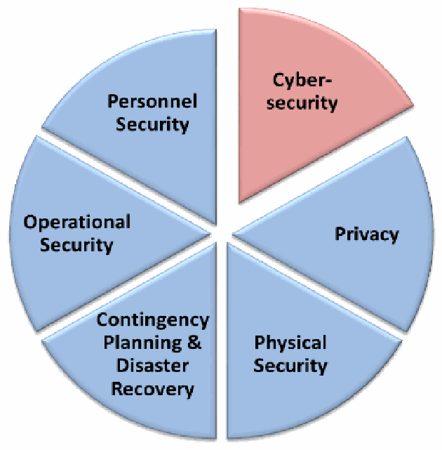
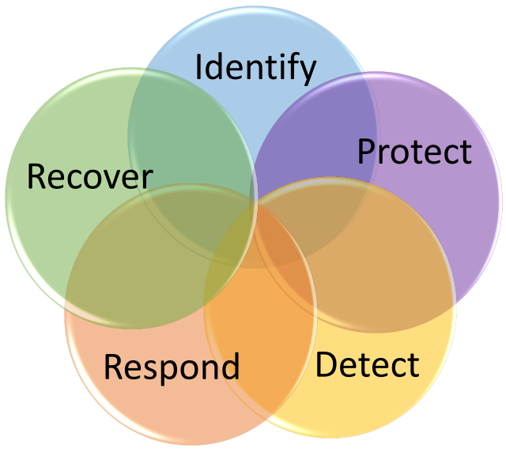

NIST IR 7621 Rev. 1 日本語訳
英語タイトル : Small Business Information Security: The Fundamentals日本語タイトル : 小規模事業者の情報セキュリティ：基礎
公開日 : 2016-11-03
原文URL : https://csrc.nist.gov/pubs/ir/7621/r1/final
翻訳編集 : 自動生成（有志による非公式の日本語訳）, 原文取得日 : 2026-10-31, 訳文 : 495 / 496 ブロック
[要約] NIST IR 7621 Rev. 1 は、小規模事業者の情報セキュリティ・プログラムの基礎を、専門的でない言葉で説明する、サイバーセキュリティの参考ガイドラインです。小規模事業者が自らの情報、システム、ネットワークに基本的なセキュリティを提供する方法についてのガイダンスを示します。サイバーセキュリティリスク管理のプロセスと手順を整理する枠組みとして、重要インフラのサイバーセキュリティを改善するためのフレームワークを用いています。構成は、情報セキュリティとサイバーセキュリティの背景、リスクの理解と管理、情報の保護、安全で確実な業務の進め方です。改訂第 1 版は、技術の変化を反映し、必要な情報を再編成したものです。
NISTIR 7621 Revision 1
NISTIR 7621 Revision 1
Small Business Information Security: The Fundamentals
小規模事業者の情報セキュリティ: 基礎
Celia Paulsen
Patricia Toth
Celia Paulsen
Patricia Toth
This publication is available free of charge from: https://doi.org/10.6028/NIST.IR.7621r1
本刊行物は、https://doi.org/10.6028/NIST.IR.7621r1 から無償で入手できます。
［NIST のロゴ。公的な標章のため、この非公式サイトには掲載していません。原本 PDF を参照してください。］
NISTIR 7621 Revision 1
NISTIR 7621 Revision 1
Small Business Information Security: The Fundamentals
小規模事業者の情報セキュリティ: 基礎
Celia Paulsen
Patricia Toth
Applied Cybersecurity Division
Information Technology Laboratory
Celia Paulsen
Patricia Toth
応用サイバーセキュリティ部門
情報技術研究所
This publication is available free of charge from: https://doi.org/10.6028/NIST.IR.7621r1
本刊行物は、https://doi.org/10.6028/NIST.IR.7621r1 から無償で入手できます。
November 2016
2016年11月
U.S. Department of Commerce
Penny Pritzker, Secretary
米国商務省
Penny Pritzker 長官
National Institute of Standards and Technology
米国国立標準技術研究所
Willie May, Under Secretary of Commerce for Standards and Technology and Director
Willie May、NIST 所長兼商務次官（標準・技術担当）
National Institute of Standards and Technology Interagency Report 7621 Revision 1
54 pages (November 2016)
米国国立標準技術研究所 省庁間報告書 7621 Revision 1
54 ページ（2016年11月）
This publication is available free of charge from: https://doi.org/10.6028/NIST.IR.7621r1
本刊行物は、https://doi.org/10.6028/NIST.IR.7621r1 から無償で入手できます。
Certain commercial entities, equipment, or materials may be identified in this document in order to describe an experimental procedure or concept adequately. Such identification is not intended to imply recommendation or endorsement by NIST, nor is it intended to imply that the entities, materials, or equipment are necessarily the best available for the purpose.
本書では、実験の手順や概念を適切に説明するために、特定の商業的な組織、機器、または資料を挙げている場合があります。こうした記載は、NIST による推奨や支持を意味するものではなく、それらの組織、資料、または機器が当該目的に利用可能なものの中で必ずしも最良であることを意味するものでもありません。
There may be references in this publication to other publications currently under development by NIST in accordance with its assigned statutory responsibilities. The information in this publication, including concepts and methodologies, may be used by Federal agencies even before the completion of such companion publications. Thus, until each publication is completed, current requirements, guidelines, and procedures, where they exist, remain operative. For planning and transition purposes, Federal agencies may wish to closely follow the development of these new publications by NIST.
本刊行物では、NIST が法令で定められた責務に従って現在策定中の他の刊行物に言及している場合があります。本刊行物の情報（概念や方法論を含む）は、そうした関連刊行物の完成前であっても、連邦機関が使用してもよいです。したがって、各刊行物が完成するまでは、既存の要件、ガイドライン、手順がある場合は、それらが引き続き有効です。計画および移行のため、連邦機関は、NIST によるこれらの新しい刊行物の策定状況を注意深く追うことを検討してもよいです。
Organizations are encouraged to review all draft publications during public comment periods and provide feedback to NIST. Many NIST cybersecurity publications, other than the ones noted above, are available at http://csrc.nist.gov/publications.
組織には、パブリックコメントの期間中にすべてのドラフト刊行物を確認し、NIST にフィードバックを提供することが推奨されます。上記以外にも、NIST のサイバーセキュリティ関連刊行物の多くが http://csrc.nist.gov/publications で公開されています。
Comments on this publication may be submitted to:
本刊行物に対するコメントの送付先:
National Institute of Standards and Technology
Attn: Applied Cybersecurity Division, Information Technology Laboratory
100 Bureau Drive (Mail Stop 2000) Gaithersburg, MD 20899-2000
Email: smallbizsecurity@nist.gov
National Institute of Standards and Technology
Attn: Applied Cybersecurity Division, Information Technology Laboratory
100 Bureau Drive (Mail Stop 2000) Gaithersburg, MD 20899-2000
Email: smallbizsecurity@nist.gov
All comments are subject to release under the Freedom of Information Act (FOIA).
すべてのコメントは、情報自由法（FOIA）に基づく公開の対象となります。
Reports on Computer Systems Technology
コンピュータシステム技術に関する報告書
The Information Technology Laboratory (ITL) at the National Institute of Standards and Technology (NIST) promotes the U.S. economy and public welfare by providing technical leadership for the Nation’s measurement and standards infrastructure. ITL develops tests, test methods, reference data, proof of concept implementations, and technical analyses to advance the development and productive use of information technology. ITL’s responsibilities include the development of management, administrative, technical, and physical standards and guidelines for the cost-effective security and privacy of other than national security-related information in Federal information systems.
米国国立標準技術研究所（NIST）の情報技術研究所（ITL）は、国の測定・標準のインフラに対する技術的なリーダーシップを提供することにより、米国の経済と公共の福祉を促進しています。ITL は、情報技術の開発と生産的な利用を促進するため、テスト、テスト方法、参照データ、概念実証の実装、および技術的な分析を開発しています。ITL の責務には、連邦情報システムにおける国家安全保障に関するもの以外の情報について、費用対効果の高いセキュリティとプライバシーを実現するための、管理面、運用面、技術面、物理面の標準およびガイドラインの策定が含まれます。
Abstract
概要
NIST developed this interagency report as a reference guideline about cybersecurity for small businesses. This document is intended to present the fundamentals of a small business information security program in non-technical language.
NIST は、小規模事業者向けのサイバーセキュリティに関する参考ガイドラインとして、本省庁間報告書を作成しました。本書は、小規模事業者の情報セキュリティプログラムの基礎を、専門的でない言葉で示すことを意図しています。
Keywords
キーワード
small business; information security; cybersecurity; fundamentals
小規模事業者、情報セキュリティ、サイバーセキュリティ、基礎
Acknowledgements
謝辞
The authors, Celia Paulsen and Patricia Toth wish to thank Richard Kissel and Dr. Hyunjeong Moon for their extensive contributions to this publication. Since 2002, NIST along with the Small Business Administration and the Federal Bureau of Investigation’s InfraGard program, has conducted research and outreach to small businesses – much of this publication is thanks to their generous time and effort. The authors would like to thank their partners and the small businesses who contributed to this work. In addition, they would like to thank those colleagues and reviewers who contributed to the document’s development.
著者の Celia Paulsen と Patricia Toth は、本刊行物に多大な貢献をした Richard Kissel 氏と Dr. Hyunjeong Moon 氏に感謝します。2002年以降、NIST は中小企業庁（Small Business Administration）および連邦捜査局（FBI）の InfraGard プログラムとともに、小規模事業者に対する調査とアウトリーチを行ってきました。本刊行物の多くは、彼らが惜しみなく費やしてくれた時間と労力のおかげです。著者は、パートナーと、この取り組みに貢献した小規模事業者に感謝します。あわせて、本書の作成に貢献した同僚と査読者にも感謝します。
Table of Contents
目次
•Make full backups of important business data/information
•重要な事業データ／情報の完全バックアップを取る
•Make incremental backups of important business data/information
•重要な事業データ／情報の増分バックアップを取る
Foreword
はじめに
Small businesses are an important part of our nation’s economic and cyber infrastructure. According to the Small Business Administration, there are approximately 28.2 million small businesses in the United States. These businesses produce approximately 46 % of our nation’s private-sector output and create 63 % of all new jobs in the country [SBA FAQ]. The Small Business Administration has the responsibility for defining small businesses; the definition varies for each industry sector [SBA SBSStds]. This publication uses the most recent Small Business Administration definitions. For this publication, the term “Small business” is synonymous with Small Enterprise or Small Organization and includes for-profit, non-profit1, and similar organizations.
小規模事業者は、わが国の経済とサイバーインフラの重要な一部を担っています。中小企業庁（Small Business Administration）によると、米国には約 2,820 万の小規模事業者があります。これらの事業者は、わが国の民間部門の生産高の約 46 % を生み出し、国内で新たに生まれる雇用の 63 % を創出しています [SBA FAQ]。小規模事業者を定義する責任は中小企業庁にあり、その定義は産業部門ごとに異なります [SBA SBSStds]。本刊行物では、中小企業庁の最新の定義を使用します。本刊行物では、「小規模事業者」という語は、小規模企業または小規模組織と同義であり、営利、非営利1、およびこれに類する組織を含みます。
For some small businesses, the security of their information, systems, and networks might not be their highest priority. However, an information security or cybersecurity incident can be detrimental to their business, customers, employees, business partners, and potentially their community. It is vitally important that each small business understand and manage the risk to information, systems, and networks that support their business.
小規模事業者の中には、自社の情報、システム、ネットワークのセキュリティを最優先事項と考えていないところもあるかもしれません。しかし、情報セキュリティまたはサイバーセキュリティのインシデントは、事業者、顧客、従業員、取引先、そして場合によっては地域社会に損害を与えるおそれがあります。小規模事業者の一つひとつが、自社の事業を支える情報、システム、ネットワークに対するリスクを理解し、管理することが、きわめて重要です。
Purpose
目的
This NIST Interagency Report (NISTIR) provides guidance on how small businesses can provide basic security for their information, systems, and networks.
本 NIST 省庁間報告書（NISTIR）は、小規模事業者が自社の情報、システム、ネットワークに対して基本的なセキュリティを確保する方法についてのガイダンスを提供します。
This NISTIR uses the Framework for Improving Critical Infrastructure Cybersecurity [CSF14] as a template for organizing cybersecurity risk management processes and procedures. Although the Cybersecurity Framework, created through collaboration between government and the private sector, was originally developed specifically for critical infrastructure organizations, it has proven useful to a variety of audiences and is used in this publication to organize information and cybersecurity best practices in an accepted and logical format. For more information about the Cybersecurity Framework, see Appendix C.
本 NISTIR は、サイバーセキュリティリスク管理のプロセスと手順を整理するためのひな形として、Framework for Improving Critical Infrastructure Cybersecurity [CSF14] を使用しています。政府と民間部門の協働によって作成されたサイバーセキュリティフレームワークは、当初、重要インフラ組織を特に対象として策定されましたが、さまざまな対象者に有用であることが示されており、本刊行物では、情報セキュリティとサイバーセキュリティのベストプラクティスを、広く受け入れられた論理的な形式で整理するために使用しています。サイバーセキュリティフレームワークの詳細は、付録 C を参照してください。
Revision 1 of this publication reflects changes in technology and a reorganization of the information needed by small businesses to implement a program to help them understand and manage their information and cybersecurity risk.
本刊行物の Revision 1 は、技術の変化と、小規模事業者が自社の情報とサイバーセキュリティのリスクを理解し管理するためのプログラムを実施するのに必要な情報の再編成を反映しています。
1 Background: What is Information Security and Cybersecurity?
1 背景: 情報セキュリティとサイバーセキュリティとは
All businesses use information – for example, employee information, tax information, proprietary information, or customer information. Information is vital to the operation of a business. If that information is compromised in some way, the business may not be able to function. Protecting the information an organization creates, uses, or stores is called “Information Security.”
あらゆる事業者が情報を使用しています。たとえば、従業員の情報、税務情報、専有情報、顧客情報などです。情報は事業の運営に不可欠です。その情報が何らかの形で危殆化すると、事業を継続できなくなるおそれがあります。組織が作成、使用、または保存する情報を保護することを「情報セキュリティ」と呼びます。
Information Security is formally defined as “The protection of information and information systems from unauthorized access, use, disclosure, disruption, modification, or destruction in order to provide confidentiality, integrity, and availability” [44USC].
情報セキュリティは、正式には「機密性、完全性、可用性を確保するために、情報および情報システムを、不正なアクセス、使用、開示、中断、改変、または破壊から保護すること」と定義されています [44USC]。
Information security encompasses people, processes, and technologies. It concentrates on how to protect:
情報セキュリティは、人、プロセス、技術を包含します。次の事項を保護することに重点を置いています。
•Confidentiality - protecting information from unauthorized access and disclosure. For example, what would happen to your company if customer information such as usernames, passwords, or credit card information was stolen?
•機密性 - 情報を不正なアクセスや開示から保護すること。たとえば、ユーザー名、パスワード、クレジットカード情報などの顧客情報が盗まれたら、会社はどうなるでしょうか。
•Integrity - protecting information from unauthorized modification. For example, what if your payroll information or a proposed product design was changed?
•完全性 - 情報を不正な改変から保護すること。たとえば、給与情報や製品設計案が改変されたらどうなるでしょうか。
•Availability - preventing disruption in how you access information. For example, what if you couldn’t log in to your bank account or access your customer’s information, or your customers couldn’t access you?
•可用性 - 情報へのアクセスが妨げられないようにすること。たとえば、銀行口座にログインできない、顧客の情報にアクセスできない、あるいは顧客が自社にアクセスできないとしたらどうなるでしょうか。
As more and more information becomes digitized - digitally stored, processed, and communicated - cybersecurity has become a key component of information security. Cybersecurity means protecting electronic devices and electronically stored information.
ますます多くの情報がデジタル化（デジタル形式での保存、処理、通信）されるにつれて、サイバーセキュリティは情報セキュリティの重要な構成要素になっています。サイバーセキュリティとは、電子機器と電子的に保存された情報を保護することを意味します。
Cybersecurity is formally defined as “Prevention of damage to, protection of, and restoration of computers, electronic communications systems, electronic communications services, wire communication, and electronic communication, including information contained therein, to ensure its availability, integrity, authentication, confidentiality, and nonrepudiation” [CNSSI4009][HSPD23].
サイバーセキュリティは、正式には「可用性、完全性、認証、機密性、否認防止を確保するために、コンピューター、電子通信システム、電子通信サービス、有線通信、および電子通信（そこに含まれる情報を含む）への損害を防ぎ、それらを保護し、それらを復旧すること」と定義されています [CNSSI4009][HSPD23]。
As part of information security, cybersecurity works in conjunction with a variety of other security measures, some of which are shown in Figure 1. As a whole, these information security components provide defense against a wide range of potential threats to your business’s information. Although much of this publication involves electronic devices and solutions, it is not limited to cybersecurity and typically refers to “information security” as a whole.
情報セキュリティの一部として、サイバーセキュリティは、図 1 に示すものなど、さまざまな他のセキュリティ対策と連携して機能します。これらの情報セキュリティの構成要素が全体として、事業者の情報に対する幅広い潜在的な脅威への防御となります。本刊行物の多くは電子機器やソリューションに関するものですが、サイバーセキュリティに限定されず、通常は「情報セキュリティ」全体を指しています。
Figure 1: Key Components of Information
図 1: 情報の主要な構成要素

情報セキュリティの構成要素を6つの扇形で示した円グラフです。サイバーセキュリティ（Cyber-security、赤で強調）、プライバシー（Privacy）、物理的セキュリティ（Physical Security）、緊急時対応計画と災害復旧（Contingency Planning & Disaster Recovery）、運用セキュリティ（Operational Security）、人的セキュリティ（Personnel Security）があります。
•Physical Security – the protection of property, e.g. using fences and locks;
•物理セキュリティ – 財産の保護。たとえば、フェンスや錠の使用。
•Personnel Security – e.g. using background checks;
•要員セキュリティ – たとえば、身元調査の実施。
•Contingency Planning and Disaster Recovery – how to resume normal operations after an incident, also known as Business Continuity Planning;
•緊急時対応計画と災害復旧 – インシデント後に通常の運用を再開する方法。事業継続計画とも呼ばれます。
•Operational Security – protecting business plans and processes, and
•運用セキュリティ – 事業計画とプロセスの保護。
•Privacy – protecting personal information.2
•プライバシー – 個人情報の保護。2
Lacking any one of these components diminishes the effectiveness of the others. For example, good physical security measures mean little if the personnel you hire intend to harm your business (poor personnel security). Or, strong privacy policies can depend on cybersecurity practices that protect customer information that is electronically stored.
これらの構成要素のどれか 1 つでも欠けると、ほかの構成要素の有効性が低下します。たとえば、雇用した要員が事業に害を及ぼそうとしているのであれば（要員セキュリティの不備）、優れた物理セキュリティ対策もほとんど意味をなしません。また、強固なプライバシーポリシーは、電子的に保存された顧客情報を保護するサイバーセキュリティの実践に依存することがあります。
1.1 Why Small Businesses?
1.1 なぜ小規模事業者か
Many businesses in the United States have been putting resources—including people, technology, and budgets—into protecting themselves from information security and cybersecurity threats. As a result, they have become a more difficult target for malicious attacks from hackers and cyber criminals. Consequently, hackers and cyber criminals are now successfully focusing more of their unwanted attention on less secure businesses.
米国の多くの事業者は、人材、技術、予算といった資源を投じて、情報セキュリティとサイバーセキュリティの脅威から自らを守ってきました。その結果、これらの事業者はハッカーやサイバー犯罪者による悪意ある攻撃の標的として、より攻めにくくなりました。そのため、ハッカーやサイバー犯罪者は現在、セキュリティの弱い事業者へと、望ましくない関心をより多く向け、成功を収めています。
Because small businesses typically don’t have the resources to invest in information security the way larger businesses can, many cyber criminals view them as soft targets. Your small business may have money or information that can be valuable to a criminal; your computer may be compromised and used to launch an attack on somebody else (i.e., a botnet), or your business may provide access to more high-profile targets through your products, services, or role in a supply chain.
小規模事業者は、大規模な事業者のように情報セキュリティに投資する資源を通常は持たないため、多くのサイバー犯罪者から狙いやすい標的と見なされています。小規模事業者は、犯罪者にとって価値のある金銭や情報を持っているかもしれません。小規模事業者のコンピューターが危殆化して、他者への攻撃（すなわちボットネット）に利用されるかもしれません。あるいは、事業者の製品、サービス、サプライチェーン上の役割を通じて、より注目度の高い標的へのアクセス経路となるかもしれません。
It is important to note that criminals aren’t always after profit. Some may attack your business out of revenge (e.g. for firing them or somebody they know), or for the thrill of causing havoc. Similarly, not all events that affect the confidentiality, availability, or integrity of your information (called “information security events”) are caused by criminals. Environmental events such as fires or floods, for example, can severely damage computer systems.
犯罪者が常に利益を求めているとは限らないことに注意することが重要です。復讐（たとえば、自分やその知人を解雇されたことへの報復）や、混乱を引き起こすスリルのために、事業者を攻撃する場合もあります。同様に、情報の機密性、可用性、完全性に影響を与える事象（「情報セキュリティ事象」と呼ばれます）のすべてが、犯罪者によって引き起こされるわけではありません。たとえば、火災や洪水などの環境上の事象は、コンピューターシステムに深刻な損害を与えることがあります。
The overall impact of an incident could include:
インシデントの全体的な影響には、次のものが含まれる場合があります。
•damage to information or information systems;
•情報や情報システムの損傷
•regulatory fines and penalties / legal fees;
•規制当局による罰金や罰則、および法的費用
•decreased productivity;
•生産性の低下
•loss of information critical in running your business;
•事業の運営に不可欠な情報の喪失
•an adverse reputation or loss of trust from customers;
•評判の悪化や顧客からの信頼の喪失
•damage to your credit and inability to get loans from banks, or
•信用の毀損と、銀行からの融資を受けられなくなること
•loss of business income.
•事業収入の喪失
Unfortunately, in one respect, small businesses often have more to lose than larger organizations simply because an event—whether a hacker, natural disaster, or business resource loss—can be extremely costly. Small businesses are often less prepared to handle these events than larger businesses, but with less complex operational needs, there are many steps a small business may be able to take more easily. Thus, it is vitally important that you consider how to protect your business.
残念ながら、ある意味では、小規模事業者のほうが大規模な組織よりも失うものが多いことがよくあります。ハッカー、自然災害、事業資源の喪失のいずれであっても、一つの事象に極めて大きな費用がかかるおそれがあるためです。小規模事業者は、こうした事象への対処に関して大規模な事業者より備えが不十分なことが多いものの、運用上の必要性が複雑でないため、小規模事業者のほうが容易に取れる対策も多くあります。したがって、自社の事業をどのように守るかを検討することが、きわめて重要です。
Small businesses often see information security as too difficult or that it requires too many resources to do. It is true that there is no easy, one-time solution to information security – it takes time and careful consideration with all relevant stakeholders. However, when viewed as part of the business’s strategy and regular processes, information security doesn’t have to be intimidating.
小規模事業者は、情報セキュリティを難しすぎる、または必要な資源が多すぎると考えがちです。情報セキュリティには、一度で済む簡単な解決策がなく、関係するすべての利害関係者とともに、時間をかけて慎重に検討する必要があることは事実です。しかし、事業の戦略と日常のプロセスの一部として捉えれば、情報セキュリティは恐れるようなものではありません。
A strong information security program can help your organization gain and retain customers, employees, and business partners. Customers have an expectation that their sensitive information will be protected from theft, disclosure, or misuse. Protecting your customers’ information is an example of good customer service and shows your customers that you value their business, potentially increasing your business opportunities.
強力な情報セキュリティプログラムは、組織が顧客、従業員、取引先を獲得し、維持するのに役立ちます。顧客は、自分の機密情報が窃取、開示、悪用から保護されることを期待しています。顧客の情報を保護することは、優れた顧客サービスの一例であり、顧客に自社との取引を大切にしていることを示すもので、事業機会の拡大につながる可能性があります。
Similarly, employees have an expectation that their sensitive personal information will be appropriately protected, and a comprehensive information security program can help employees feel valued and help improve their knowledge, skills, and abilities. Also, other business partners want assurance that their information, systems, and networks are not put at risk when they connect to and do business with your business; demonstrating to potential business partners that you have a method to protect their information can help strengthen and grow your business relationship. Developing or improving your information security program will also make it easier for your organization to innovate – taking advantage of new technologies that can lower costs while delivering better services to your customers [EY14][Grady05].
同様に、従業員も、自分の機密性の高い個人情報が適切に保護されることを期待しており、包括的な情報セキュリティプログラムは、従業員が大切にされていると感じるのに役立つとともに、従業員の知識、技能、能力の向上にも役立ちます。また、ほかの取引先は、自社の情報、システム、ネットワークが、事業者に接続して取引する際にリスクにさらされないという保証を求めています。取引先となりうる相手に対して、その情報を保護する方法があることを示せば、事業上の関係を強化し、発展させる助けになります。情報セキュリティプログラムを策定または改善することで、組織はイノベーションも起こしやすくなります。コストを下げながら顧客により良いサービスを提供できる新しい技術を活用できるからです [EY14][Grady05]。
It is not possible for any business to be completely secure. Nevertheless, it is possible—and reasonable—to implement a program that balances security with the needs and capabilities of your business. This publication provides small businesses with basic practices and tools needed to develop an information security program to protect your business’s information.
完全に安全な事業者は存在し得ません。それでも、事業者のニーズと能力に見合ったかたちでセキュリティの均衡を図るプログラムを実施することは可能であり、また合理的です。本刊行物は、小規模事業者に対して、事業者の情報を保護するための情報セキュリティプログラムを策定するのに必要な基本的な実践事項とツールを提供します。
1.2 Organization of this Publication
1.2 本刊行物の構成
The rest of this publication is organized as follows:
本刊行物の残りの部分は、次のように構成されています。
•Section 2 describes how an information security program can be implemented.
•第 2 節では、情報セキュリティプログラムをどのように実施できるかを説明します。
•Section 3 discusses those key actions small businesses can take to develop or improve their information security and cybersecurity.
•第 3 節では、小規模事業者が情報セキュリティとサイバーセキュリティを策定または改善するために取ることのできる主要な対策を取り上げます。
•Section 4 identifies several key practices directed towards users which you can implement immediately and which will protect your system and information.
•第 4 節では、ユーザーに向けた主要な実践事項のうち、すぐに実施でき、システムと情報の保護につながるものをいくつか示します。
•Appendix A provides a glossary of key terms and acronyms used in this publication.
•付録 A では、本刊行物で使用している主要な用語と略語の用語集を示します。
•Appendix B contains sources referenced throughout this publication.
•付録 B には、本刊行物全体で参照している出典を掲載します。
•Appendix C contains a description of the NIST Framework for Improving Critical Infrastructure Cybersecurity [CSF14].
•付録 C には、NIST の Framework for Improving Critical Infrastructure Cybersecurity [CSF14] の説明を掲載します。
•Appendix D provides worksheets useful in conducting a risk analysis.
•付録 D では、リスク分析を実施する際に役立つワークシートを示します。
•Appendix E contains example information security policy and procedure statements.
•付録 E には、情報セキュリティのポリシーと手順の記述例を掲載します。
2 Understanding and Managing Your Risks
2 リスクの理解と管理
Risk is a function of threats, vulnerabilities, the likelihood of an event, and the potential impact such an event would have to the business. Most of us make risk-based decisions every day. While driving to work, we assess threats and vulnerabilities such as weather and traffic conditions, the skill of other drivers on the road, and the safety features and reliability of the vehicle we drive.
リスクは、脅威、脆弱性、事象の発生可能性、およびそうした事象が事業に与えうる影響の関数です。私たちの多くは、日々、リスクに基づいた判断をしています。たとえば、車で通勤するときには、天候や交通状況、道路上のほかの運転者の技量、運転する車の安全機能や信頼性といった脅威や脆弱性を評価しています。
By understanding your risks, you can know where to focus your efforts. While you can never completely eliminate your risks, the goal of your information security program should be to provide reasonable assurance that you have made informed decisions related to the security of your information.
リスクを理解することで、どこに力を注ぐべきかがわかります。リスクを完全になくすことは決してできませんが、情報セキュリティプログラムの目標は、情報のセキュリティに関して十分な情報に基づいた判断を行ったという合理的な保証を提供することであるべきです。
It is impossible to completely understand all of your risks perfectly. There will be many times when you will have to make a reasonable effort when trying to understand threats, vulnerabilities, potential impact and likelihood. For this reason, it is important to utilize all resources available to you, including information sharing organizations (e.g., [US-CERT], [ISACA], etc.), relevant stakeholders, and knowledge experts.
リスクのすべてを完全に理解することは不可能です。脅威、脆弱性、潜在的な影響、発生可能性を理解しようとする際に、合理的な努力で対応しなければならない場面は多くあります。そのため、情報共有組織（たとえば [US-CERT]、[ISACA] など）、関係する利害関係者、専門知識を持つ人など、利用できるあらゆる資源を活用することが重要です。
2.1 Elements of Risk
2.1 リスクの要素
In information security, a threat is anything that might adversely affect the information your business needs to run. These threats might come in the form of personnel or natural events; they can be accidents, or intentional. Some of the most common information security threats include:
情報セキュリティにおける脅威とは、事業の運営に必要な情報に悪影響を及ぼしうるあらゆるものを指します。こうした脅威は、要員や自然現象という形で現れることがあり、偶発的なものも意図的なものもあります。情報セキュリティの脅威のうち、最も一般的なものには、次のようなものがあります。
•Environmental (e.g. fire, water, tornado, earthquake);
•環境（たとえば、火災、水害、竜巻、地震）
•Business Resources (e.g. equipment failure, supply chain disruption, employees), and
•事業資源（たとえば、機器の故障、サプライチェーンの途絶、従業員）
•Hostile Actors (e.g. hackers, hacktivists, criminals, nation-state actors).
•敵対的な行為者（たとえば、ハッカー、ハクティビスト、犯罪者、国家主体）。
When looking at these types of threats, many people do not understand how they relate to information security. It is helpful to consider what would happen in the event of, for example, a flood. Computers, servers, and paper documents can easily be destroyed by even a small amount of water. If it is a large flood, you may not be allowed in the area to protect or collect the information your business needs to run.
こうした種類の脅威を見たとき、それらが情報セキュリティとどう関係するのかを理解できない人は多くいます。たとえば、洪水が起きた場合に何が起こるかを考えてみるとよいでしょう。コンピューター、サーバー、紙の文書は、少量の水でも簡単に壊れてしまいます。大規模な洪水の場合は、事業の運営に必要な情報を保護したり回収したりするために、その区域に立ち入ることができない可能性があります。
A vulnerability is a weakness that could be used to harm the business. Any time or situation where information is not being adequately protected represents a vulnerability. Most information security breaches can be traced back to only a few types of common vulnerabilities. Section 3 and Section 4 of this publication are geared towards minimizing your vulnerabilities and reducing the impact of a security incident should one happen.
脆弱性とは、事業に害を及ぼすために利用されうる弱点のことです。情報が十分に保護されていない時や状況はすべて、脆弱性にあたります。情報セキュリティ侵害の大半は、ごく少数の種類の一般的な脆弱性にさかのぼることができます。本刊行物の第 3 節と第 4 節は、脆弱性を最小限に抑え、セキュリティインシデントが起きた場合の影響を軽減することを目的としています。
Some threats affect businesses and industries differently. For example, an online retailer may be more concerned about website defacement than a business with little or no web presence. Likelihood is the chance that a threat will affect your business and helps determine what types of protections to put in place.
脅威の中には、事業や産業によって影響の出方が異なるものがあります。たとえば、オンライン小売業者は、ウェブでの存在感がほとんどまたはまったくない事業者よりも、ウェブサイトの改ざんを懸念するかもしれません。発生可能性とは、脅威が事業に影響を与える確率のことで、どのような種類の保護を導入するかを決めるのに役立ちます。
Similarly, most businesses have different types of information. If a marketing pamphlet is leaked online, it will probably not harm the business nearly as much as if, for example, sensitive customer information or proprietary business data was leaked. The impact an event could have depends on the information affected, the business, and the industry.
同様に、ほとんどの事業者はさまざまな種類の情報を持っています。マーケティング用のパンフレットがオンラインで漏えいしても、たとえば機密性の高い顧客情報や専有の事業データが漏えいした場合ほど、事業に害が及ぶことはおそらくありません。事象が与えうる影響は、影響を受ける情報、事業、産業によって異なります。
Figure 2 shows the relationship between threats, vulnerabilities, impact, and likelihood.
図 2 は、脅威、脆弱性、影響、発生可能性の関係を示しています。
![Diagram of how risk is determined. Two boxes at the top are joined by a two-way arrow: "Threats" (Environmental; Business Resources; Hackers / Criminals) and "Vulnerabilities" (Weakness in security protections). An arrow leads down to "Likelihood – chance of threat affecting the business" (Occurrence based on history / industry statistics; For adversarial threats: capability and intent), then to "Impact – potential harm to the business" (The theft or disclosure of sensitive business information; Business information or systems being modified; The loss of information or system availability), and finally to "RISK".](assets/ir-7621r1/p0013-figure-01.png)
リスクの決まり方を示す図です。上段に「脅威（Threats）」（環境、ビジネス資源、ハッカー／犯罪者）と「脆弱性（Vulnerabilities）」（セキュリティ保護の弱点）の2つの枠があり、双方向の矢印で結ばれています。下向きの矢印で「可能性（Likelihood）― 脅威がビジネスに影響する見込み」（過去の経緯・業界統計に基づく発生、敵対的な脅威については能力と意図）に進み、次に「影響（Impact）― ビジネスへの潜在的な損害」（機密性のある業務情報の窃取・漏えい、業務情報やシステムの改変、情報やシステムの可用性の喪失）、最後に「リスク（RISK）」に至ります。
Figure 2: How Risk is determined from Threats, Vulnerabilities, Likelihood, and Impact
図 2: 脅威、脆弱性、発生可能性、影響からのリスクの決まり方
2.2 Managing Your Risks
2.2 リスクの管理
The activity of identifying what information requires what level of protection, and then implementing and monitoring that protection, is called “risk management”3. This section contains simple steps for creating a risk-based information security program to help you manage risk.
どの情報にどのレベルの保護が必要かを特定し、その保護を実施して監視する活動を「リスク管理」3 と呼びます。本節では、リスク管理に役立つ、リスクに基づいた情報セキュリティプログラムを作成するための簡単な手順を示します。
This process will likely require the input and collaboration of a broad array of personnel within the business to be successful. You should bring together those personnel in your business that can help make informed decisions, for example project managers, executives, legal, and IT personnel. In addition, you may want to consider including customers, particularly you do a significant amount of business with, and use them as an additional resource.
このプロセスを成功させるには、事業者内の幅広い要員の意見と協力が必要となる可能性が高いです。たとえば、プロジェクトマネージャー、経営幹部、法務担当者、IT 担当者など、情報に基づいた判断に貢献できる要員を事業者内から集めるべきです。さらに、顧客、特に取引量の多い顧客を含めることを検討し、追加の資源として活用することも考えられます。
You should review and update your risk management plan at least annually and whenever you may be considering any changes to the business (e.g. beginning a new project, a change in procedure, or purchasing a new IT system). Also, if you hear that something happened to one of your business partners, suppliers (including makers of any computer equipment or software you may use), customers, or employees, use this exercise to make sure you are still adequately protected.
リスク管理計画は、少なくとも年に 1 回、また事業の変更（たとえば、新しいプロジェクトの開始、手順の変更、新しい IT システムの購入）を検討するたびに、見直して更新すべきです。また、取引先、供給者（使用しているコンピューター機器やソフトウェアの製造者を含む）、顧客、従業員のいずれかに何かが起きたと聞いた場合は、この作業を活用して、自社が引き続き適切に保護されているかを確認してください。
•Identify what information your business stores and uses
•事業者が保存・利用している情報を特定する
Because it is unreasonable to protect every piece of information your business uses against every possible threat, it is important to identify what information is most valuable to your business or to others. This first step is often the most challenging and most important part of risk management.
事業者が使用するすべての情報を、考えられるあらゆる脅威から守ることは現実的ではないため、自社または他者にとって最も価値のある情報が何かを特定することが重要です。この最初のステップは、リスク管理で最も困難で、かつ最も重要な部分であることが多くあります。
Start by listing all of the types of information your business stores or uses. Define “information type” in any useful way that makes sense to your business. You may want to have your employees make a list of all the information they use in their regular activities. List everything you can think of, but you do not need to be too specific. For example, you may keep customer names and email addresses, receipts for raw material, your banking information, or other proprietary information.
まず、事業者が保存または使用している情報の種類をすべて挙げます。「情報の種類」は、自社にとって意味のある、役に立つ方法で定義してください。従業員に、日常の業務で使用しているすべての情報を一覧にしてもらうとよいでしょう。思いつくものをすべて挙げますが、あまり細かくする必要はありません。たとえば、顧客の氏名とメールアドレス、原材料の領収書、銀行情報、そのほかの専有情報などを保管しているかもしれません。
•Determine the value of your information
•情報の価値を判断する
Go through each information type you identified and ask these key questions:
特定した情報の種類を一つずつ確認し、次の重要な質問をします。
•What would happen to my business if this information was made public?
•この情報が公開されたら、自社の事業はどうなりますか。
•What would happen to my business if this information was incorrect?
•この情報が誤っていたら、自社の事業はどうなりますか。
•What would happen to my business if I/my customers couldn’t access this information?
•自分や顧客がこの情報にアクセスできなくなったら、自社の事業はどうなりますか。
These questions relate to confidentiality, integrity, and availability, as discussed in Section 1.1 and help determine the potential impact of an event. Table 1 below shows a template worksheet or spreadsheet you can adapt and use to identify the value of your information. Table 1 also includes some additional, helpful questions to consider what would happen to your business reputation, your productivity, and your legal liabilities.
これらの質問は、1.1 節で説明した機密性、完全性、可用性に関するもので、事象が与えうる潜在的な影響を判断するのに役立ちます。以下の表 1 は、情報の価値を特定するために調整して使用できるワークシートまたはスプレッドシートのひな形です。表 1 には、事業の評判、生産性、法的責任に何が起こるかを考えるための、役に立つ追加の質問も含まれています。
You may not be able to assign a dollar value amount for many types of information, so instead, consider using use a scale of 0 to 3 or “none,” “low,” “moderate,” and “high.” Note that one person alone may not know how a piece of information is used throughout the business – a team effort will likely be required.
多くの種類の情報には金額を割り当てられないかもしれません。その場合は、代わりに 0 から 3 の尺度、または「なし」「低」「中」「高」を使用することを検討してください。1 人だけでは、ある情報が事業全体でどのように使われているかを把握できない場合があるため、チームで取り組むことが必要になる可能性が高い点に注意してください。
Using the answers to these questions, rank how critical each type of information is to the continued operations of your business. When calculating an overall ranking or risk score for an information type, either add the values to give a total value or use the highest value or score given. For example, if the information type has one “high” rating, the entire information type should be rated as “high”. Information that has a higher score needs to be more protected than information with a low score. Higher-rated information types may warrant use of the techniques identified in Section 3 of this publication, depending on the relevant threats and vulnerabilities.
これらの質問への回答を使って、各種類の情報が事業の継続的な運営にとってどれほど重要かを順位付けします。ある種類の情報について総合的な順位またはリスクスコアを算出するときは、値を合計して総合値とするか、付けられた最も高い値またはスコアを使用します。たとえば、その種類の情報に「高」の評価が 1 つでもあれば、その種類の情報全体を「高」と評価すべきです。スコアが高い情報は、スコアが低い情報より手厚く保護する必要があります。評価の高い種類の情報には、関係する脅威と脆弱性に応じて、本刊行物の第 3 節で示す手法の使用が適切な場合があります。
Table 1 on the next page is an example worksheet showing how this information can be gathered. The worksheet includes a worked example shown in italics. The worksheet is also available in Appendix D.
次ページの表 1 は、この情報をどのように収集できるかを示すワークシートの例です。ワークシートには、斜体で示した記入例が含まれています。このワークシートは付録 D にも掲載しています。
Table 1: Identify and Prioritize Information Types
表 1: 情報の種類の特定と優先順位付け
| Example: Customer Contact Information | Info type 1 | Info type 2 | Info type 3 | … | |
|---|---|---|---|---|---|
| Cost of revelation (Confidentiality) | Med | ||||
| Cost to verify information (Integrity) | High | ||||
| Cost of lost access (Availability) | High. | ||||
| Cost of lost work | High | ||||
| Fines, penalties, customer notification | Med | ||||
| Other legal costs | Low | ||||
| Reputation / public Relations costs | High | ||||
| Cost to identify and repair problem | High | ||||
| Overall Score: | High |
| 例: 顧客の連絡先情報 | 情報の種類 1 | 情報の種類 2 | 情報の種類 3 | … | |
|---|---|---|---|---|---|
| 漏えいによる費用（機密性） | 中 | ||||
| 情報を検証するための費用（完全性） | 高 | ||||
| アクセスを失うことによる費用（可用性） | 高。 | ||||
| 失われた作業の費用 | 高 | ||||
| 罰金、罰則、顧客への通知 | 中 | ||||
| その他の法的費用 | 低 | ||||
| 評判／広報の費用 | 高 | ||||
| 問題を特定して修復するための費用 | 高 | ||||
| 総合スコア: | 高 |
•Develop an inventory
•インベントリを作成する
Identify what technology comes in contact with the information you listed in Table 1. Complete Table 2 to include the technology you use to store, access, process, and transmit that information. This can include hardware (e.g. computers) and software applications (e.g. browser email). Make sure to include the make, model, serial numbers, and other identifying information; this information is necessary for identifying the product in case of maintenance, repair, or insurance purposes. Every information type should have at least one hardware / software technology listed. Where applicable, include technologies outside of your business (e.g., “the cloud”) and any protection technologies you have in place such as firewalls.
表 1 に挙げた情報に接する技術を特定します。表 2 に、その情報を保存、アクセス、処理、送信するために使用している技術を記入して完成させます。これにはハードウェア（たとえば、コンピューター）やソフトウェアアプリケーション（たとえば、ブラウザーのメール）を含めることができます。メーカー、モデル、シリアル番号、そのほかの識別情報を必ず含めてください。この情報は、保守、修理、保険の目的で製品を識別するために必要です。すべての種類の情報について、少なくとも 1 つのハードウェア／ソフトウェア技術を記載します。該当する場合は、事業者の外部にある技術（たとえば「クラウド」）や、ファイアウォールなど、導入済みの防御技術も含めます。
You should also track where each product is located. For software, identify what machine(s) the software has been loaded on to. You may also want to include the owner of the technology, if applicable.
各製品がどこにあるかも記録しておくべきです。ソフトウェアについては、どのマシンにそのソフトウェアがロードされているかを特定します。該当する場合は、その技術の所有者も含めておくとよいでしょう。
Evaluate the impact of the information, as decided in Table 1—this will help you determine the most appropriate security controls needed to protect the information. You may choose to add up impact scores for all types of information the product comes in contact with, or only use the highest score. Update this list at least annually. This table is also included in Appendix D.
表 1 で決めた情報の影響を評価します。これは、その情報を保護するために必要な最も適切なセキュリティ対策を決めるのに役立ちます。その製品が接するすべての種類の情報の影響スコアを合計することも、最も高いスコアだけを使用することもできます。この一覧は、少なくとも年に 1 回更新します。この表は付録 D にも掲載しています。
Table 2: Inventory
表 2: インベントリ
| Description (e.g. nickname, make, model, serial number, service ID, other identifying information) | Location | Type of information the product comes in contact with. | Overall Potential Impact | |
|---|---|---|---|---|
| 1 | Dr. J. Smith’s cell phone; Type – Sonic; Version – 9.0 ID – “Police Box” | Mobile T&S Network | Email; Calendar; Customer Contact Information; Photos; Social Media; Locations; Medical Dictionary Application | High |
| 2 | ||||
| 3 | ||||
| 4 | ||||
| 5 |
| 説明（例: 愛称、メーカー、モデル、シリアル番号、サービス ID、そのほかの識別情報） | 場所 | 製品が接する情報の種類 | 総合的な潜在的影響 | |
|---|---|---|---|---|
| 1 | Dr. J. Smith の携帯電話; Type – Sonic; Version – 9.0 ID – “Police Box” | Mobile T&S Network | メール; カレンダー; 顧客の連絡先情報; 写真; ソーシャルメディア; 位置情報; 医学辞典アプリケーション | 高 |
| 2 | ||||
| 3 | ||||
| 4 | ||||
| 5 |
•Understand your threats and vulnerabilities
•脅威と脆弱性を理解する
All businesses face information security and cybersecurity threats and vulnerabilities. While certain categories of threats and vulnerabilities may be consistent across businesses, some may be specific to your industry, location, and business. You should regularly review what threats and vulnerabilities your business may face and estimate the likelihood that you will be affected by that threat or vulnerability. This can help you identify specific strategies to protect against that threat or vulnerability.
あらゆる事業者が、情報セキュリティとサイバーセキュリティの脅威と脆弱性に直面しています。脅威や脆弱性の特定の分類は事業者を問わず共通かもしれませんが、業種、所在地、事業に固有のものもあります。自社の事業がどのような脅威や脆弱性に直面しうるかを定期的に見直し、その脅威や脆弱性の影響を受ける可能性を見積もるべきです。これは、その脅威や脆弱性から守るための具体的な戦略を特定するのに役立ちます。
Table 3 provides an example of how to determine the likelihood of an incident based on the information you collected in Tables 1 and 2. The left-hand column of the table lists some example threat events or scenarios—you should create a list that is specific to the threats and vulnerabilities your business faces. Evaluate the likelihood of the threat to your business in the bottom row. Use the highest value or score given. For example, if the information type has one “high” rating, the entire information type should be rated as “high”. See Appendix D for more information on this worksheet.
表 3 は、表 1 と表 2 で収集した情報に基づいて、インシデントの発生可能性を判断する方法の例を示しています。表の左の列には、脅威となる事象やシナリオの例を挙げています。自社の事業が直面する脅威と脆弱性に固有の一覧を作成すべきです。最下行で、自社の事業に対する脅威の発生可能性を評価します。付けられた最も高い値またはスコアを使用します。たとえば、その種類の情報に「高」の評価が 1 つでもあれば、その種類の情報全体を「高」と評価すべきです。このワークシートの詳細は付録 D を参照してください。
Table 3: Identify Threats, Vulnerabilities, and the Likelihood of an Incident
表 3: 脅威、脆弱性、インシデントの発生可能性の特定
| Example: Customer Contact Information on Dr. J. Smith’s cell phone | Info type / Technology | Info type / Technology | Info type / Technology | … | |
|---|---|---|---|---|---|
| Confidentiality | |||||
| Theft by criminal | Med (encrypted; password-protected) | ||||
| Accidental disclosure | Med (has previously lost phone twice) | ||||
| Integrity | |||||
| Accidental alteration by user / employee | Med | ||||
| Intentional alteration by external criminal / hacker | Low | ||||
| Availability | |||||
| Accidental Destruction (fire, water, user error) | Med (Regular backups) | ||||
| Intentional Destruction | Low | ||||
| Overall Likelihood: | Med |
| 例: Dr. J. Smith の携帯電話にある顧客の連絡先情報 | 情報の種類／技術 | 情報の種類／技術 | 情報の種類／技術 | … | |
|---|---|---|---|---|---|
| 機密性 | |||||
| 犯罪者による窃取 | 中（暗号化済み、パスワードで保護） | ||||
| 偶発的な開示 | 中（過去に 2 回、電話を紛失している） | ||||
| 完全性 | |||||
| ユーザー／従業員による偶発的な改変 | 中 | ||||
| 外部の犯罪者／ハッカーによる意図的な改変 | 低 | ||||
| 可用性 | |||||
| 偶発的な破壊（火災、水害、ユーザーの誤操作） | 中（定期的なバックアップ） | ||||
| 意図的な破壊 | 低 | ||||
| 総合的な発生可能性: | 中 |
Your business likely already has some processes and procedures in place which help to protect from these threats. It is useful to record these protections as you go through this exercise (e.g. the destruction of information may be mitigated or protected by regular backups). Information about threats and common vulnerabilities can be found through your local InfraGard chapter [InfraGard], [US-CERT], your local SCORE4 chapter, hardware or software vendor announcements, your local police department and many other places (e.g., the National Vulnerability Database [NVD]).
事業者には、これらの脅威から保護するのに役立つプロセスや手順が、すでにいくつか存在している可能性が高いです。この作業を進めながら、こうした保護を記録しておくと役立ちます（たとえば、情報の破壊は、定期的なバックアップによって低減または防止されている場合があります）。脅威や一般的な脆弱性に関する情報は、地元の InfraGard 支部 [InfraGard]、[US-CERT]、地元の SCORE4 支部、ハードウェアやソフトウェアのベンダーの告知、地元の警察署など、さまざまな場所（たとえば、National Vulnerability Database [NVD]）から入手できます。
Vulnerabilities found in software applications are the most common avenue of attack for hackers. Because of the broad range of vulnerabilities possibly found within a network or system, a vulnerability scan or analysis should be minimally conducted once a year by a professional and again whenever you make major changes to your computers or network. The prices for this service can vary widely—from free to thousands of dollars— depending on the specific actions performed and the size or nature of the business being assessed.
ソフトウェアアプリケーションに見つかる脆弱性は、ハッカーにとって最も一般的な攻撃経路です。ネットワークやシステム内に見つかりうる脆弱性は広範囲にわたるため、脆弱性スキャンや分析は、少なくとも年に 1 回専門家が実施し、コンピューターやネットワークに大きな変更を加えるたびにもう一度実施すべきです。このサービスの価格は、実施する具体的な作業や評価対象の事業の規模や性質によって、無料から数千ドルまで大きく異なります。
You may want to consider conducting a penetration test against your business. This test simulates an attack in order to identify weaknesses. The test should include physical, social engineering, and cyber-based attacks. Other tests may also be useful—work with a cybersecurity professional to identify what is appropriate for your situation.
自社の事業に対してペネトレーションテストを実施することを検討してもよいでしょう。このテストは、弱点を特定するために攻撃を模擬します。テストには、物理的な攻撃、ソーシャルエンジニアリング、サイバー上の攻撃を含めるべきです。ほかのテストも役立つ場合があります。サイバーセキュリティの専門家と協力して、自社の状況に適したものを特定してください。
The information gathered in Tables 1 - 3 provide the information necessary to identify the areas where you need to focus your information security efforts. Table 4 below shows an example of how the value of your information types or “impact” (Tables 1 and 2) and the potential likelihood of an attack (Table 3) can be combined to help you prioritize your information security efforts.
表 1 から 3 で収集した情報は、情報セキュリティの取り組みに重点を置くべき領域を特定するために必要な情報を提供します。以下の表 4 は、情報の種類の価値または「影響」（表 1 と表 2）と、攻撃の潜在的な発生可能性（表 3）を組み合わせて、情報セキュリティの取り組みの優先順位付けに役立てる方法の例を示しています。
Table 4: Prioritize Resolution Action
表 4: 解決策の優先順位付け
| Impact | High | Priority 3 – Schedule a resolution. Focus on Respond and Recover solutions. | Priority 1 – Implement immediate resolution. Focus on Detect and Protect solutions. |
|---|---|---|---|
| Low | No action needed | Priority 2 – Schedule a resolution. Focus on Detect and Protect solutions. | |
| Low | High | ||
| Likelihood | |||
| 影響 | 高 | 優先度 3 – 解決策を計画します。対応と復旧のソリューションに重点を置きます。 | 優先度 1 – 直ちに解決策を実施します。検知と防御のソリューションに重点を置きます。 |
|---|---|---|---|
| 低 | 対応不要 | 優先度 2 – 解決策を計画します。検知と防御のソリューションに重点を置きます。 | |
| 低 | 高 | ||
| 発生可能性 | |||
Using the previous example, Dr. J. Smith’s Cell Phone, which contains customer contact information, may be a Priority 3 device due to the High impact and Low Likelihood.
先ほどの例を使うと、顧客の連絡先情報を含む Dr. J. Smith の携帯電話は、影響が高く発生可能性が低いため、優先度 3 のデバイスになる可能性があります。
As you review the practices in Section 3 and 4 of this document, look at what technologies and services you may need to purchase. When you develop a budget, apply the information from this exercise to help you select, obtain and implement systems and services that are commensurate with your risk.
本書の第 3 節と第 4 節の実践事項を確認する際には、どのような技術やサービスを購入する必要があるかを検討してください。予算を策定するときは、この作業で得た情報を活用して、自社のリスクに見合ったシステムやサービスを選定、入手、導入してください。
2.3 When you need help
2.3 支援が必要なとき
No one is an expert in every business and technical area. You may choose to outsource some of your technology and information security needs to companies that provide these services. Here are a few tips which can help you find a provider that’s right for your business:
事業や技術のあらゆる分野に精通した人はいません。技術や情報セキュリティに関するニーズの一部を、これらのサービスを提供する企業に外部委託することもできます。自社の事業に適した提供者を見つけるのに役立つヒントを、いくつか示します。
•Ask for recommendations. You can ask your business partners, local Chamber of Commerce, Better Business Bureau, colleges or universities, or SCORE Office for referrals.
•推薦を求めます。取引先、地元の商工会議所、Better Business Bureau、大学、SCORE の事務所に紹介を依頼できます。
•Request quotes. Make sure to have a clear list of actions or outcomes that you want to achieve. This may be done with the potential provider, depending on whether or not you want their opinion of what actions or outcomes your business should have.
•見積りを依頼します。達成したい対策や成果の一覧を明確にしておきます。事業者がどのような対策や成果を持つべきかについて提供候補者の意見を求めたいかどうかによって、これは提供候補者と一緒に行ってもよいでしょう。
•Check past performance. Often providers will have reviews posted online. Check for complaints with the Better Business Bureau or Federal Trade Commission. If possible, request a list of past customers and contact each to see if the customer was satisfied with the company’s performance and would hire them again for future work. Find out how long the company has been in business and whether or not there have been recent or several changes in management – this can be an indicator of future difficulties.
•過去の実績を確認します。提供者のレビューがオンラインに掲載されていることがよくあります。Better Business Bureau や連邦取引委員会（Federal Trade Commission）に苦情がないか確認します。可能であれば、過去の顧客の一覧を依頼し、それぞれに連絡して、その企業の仕事に満足したか、今後の仕事でも依頼したいと思うかを確認します。その企業が事業を始めてからどのくらいになるか、最近、または複数回の経営陣の交代がなかったかも調べます。これは、将来の問題の兆候である可能性があります。
•Find out who will be doing your work. Ask for the professional qualifications of the personnel who will be handling the project – including those working directly with you or on your systems as well as any personnel that will be overseeing the project. Look for recognized professional certifications and relevant experience.
•実際に作業を担当する人を確認します。プロジェクトを担当する要員（自社やシステムを直接担当する要員と、プロジェクトを監督する要員を含む）の専門資格を尋ねます。広く認められた専門資格と関連する経験を確認します。
Recognize that anyone you hire to perform a service for you may not know your business or industry. Any large decisions – including any changes in processes or technologies used - should be made in collaboration with business executives, project leaders, and other relevant personnel.
サービスを依頼する相手は、自社の事業や業界を知らない可能性があることを認識してください。プロセスや使用する技術の変更を含め、大きな決定は、経営幹部、プロジェクトリーダー、そのほかの関係する要員と協力して行うべきです。
In some cases, larger organizations will help their small business suppliers analyze their risks and develop an information security program. If you have a business partners or large customers that depend on your organization, consider asking for their input or participation in your risk management process.
大規模な組織が、小規模事業者の供給者によるリスク分析や情報セキュリティプログラムの策定を支援する場合もあります。自社に依存している取引先または大口顧客がある場合は、自社のリスク管理プロセスに対する意見や参加を求めることを検討してください。
3 Safeguarding Your Information
3 情報の保護
This publication uses the Framework for Improving Critical Infrastructure Cybersecurity (the “Cybersecurity Framework”) to organize the processes and tools that you should consider to protect your information [CSF14]. Appendix C contains more information about the Cybersecurity Framework. This is not a one-time process, but a continual, on-going set of activities. Although the Cybersecurity Framework was originally developed specifically for critical infrastructure organizations, it has proven useful to a variety of audiences as it provides a simple, common language for helping organizations to identify, assess, and manage cybersecurity risks.
本刊行物では、情報を保護するために検討すべきプロセスとツールを整理するために、Framework for Improving Critical Infrastructure Cybersecurity（「サイバーセキュリティフレームワーク」）を使用しています [CSF14]。サイバーセキュリティフレームワークの詳細は付録 C を参照してください。これは一度きりのプロセスではなく、継続的で終わりのない一連の活動です。サイバーセキュリティフレームワークは、当初は重要インフラ組織を特に対象として策定されましたが、組織がサイバーセキュリティリスクを識別、評価、管理するのに役立つ、簡潔で共通の言語を提供するため、さまざまな読者に有用であることが示されています。
This section provides activities you can implement in your business. In addition, Section 4 of this publication lists some common practices you and your employees can implement to help keep your business safe. The specific mitigation activities in this section are grouped into the five broad categories of the Cybersecurity Framework, as pictured in Figure 3. Some of the activities in this publication are suggestions for consideration. This means that those activities are recommended when a higher level of assurance (confidentiality, integrity, or availability) is needed to protect the information and meet business needs than is provided by the more basic practices.
本節では、事業者で実施できる活動を示します。また、本刊行物の第 4 節では、事業を安全に保つために、事業主と従業員が実施できる一般的な実践事項を挙げています。本節の具体的な低減活動は、図 3 に示すように、サイバーセキュリティフレームワークの 5 つの大きなカテゴリーに分類されています。本刊行物の活動の一部は、検討のための提案です。これは、情報を保護し事業上のニーズを満たすために、より基本的な実践事項が提供する水準よりも高い水準の保証（機密性、完全性、または可用性）が必要な場合に、それらの活動が推奨されることを意味します。

5つの円が輪の形に重なり合った図で、それぞれ「識別（Identify）」「防御（Protect）」「検知（Detect）」「対応（Respond）」「復旧（Recover）」と記されています。サイバーセキュリティフレームワークの5つの機能（区分）を表します。
Figure 3: The Cybersecurity Framework Categories
図 3: サイバーセキュリティフレームワークのカテゴリー
3.1 Identify
3.1 識別（IDENTIFY）
As described in the Cybersecurity Framework, the activities in the Identify Function help increase an organization’s understanding of their resources and risks.5
サイバーセキュリティフレームワークに記載されているとおり、識別（IDENTIFY）機能の活動は、組織が自らの資源とリスクをより深く理解するのに役立ちます。5
•Identify and control who has access to your business information
•事業情報にアクセスできる人を特定し、制御する
Determine who has or should have access to your business’s information and technology. Include whether or not a key, administrative privilege, or password is required. To help collect this information, review your list of accounts and what privileges those accounts have.
誰が事業者の情報や技術にアクセスできるか、またはアクセスできるべきかを判断します。鍵、管理者権限、パスワードが必要かどうかも含めます。この情報を収集しやすくするため、アカウントの一覧と、それらのアカウントが持つ権限を確認します。
Be aware of anyone who has access to your business. Do not allow unknown or unauthorized persons to have physical access to any of your business computers. This includes cleaning crews and maintenance personnel. Do not allow computer or network repair personnel to work on systems or devices unsupervised. No unrecognized person should be able to enter your office space without being questioned by an employee. If a criminal gains physical access to an unlocked machine, they can relatively easily steal any private or sensitive information on that machine.
事業所に出入りできる人すべてに注意を払います。見知らぬ人や許可されていない人に、事業者のコンピューターへの物理的なアクセスを許してはなりません。これには、清掃員や保守要員も含まれます。コンピューターやネットワークの修理要員には、監督なしでシステムやデバイスに作業させてはなりません。見知らぬ人が、従業員に声をかけられずにオフィスに入ることができてはなりません。犯罪者がロックされていないマシンに物理的にアクセスできれば、そのマシン上の個人情報や機密情報を比較的簡単に盗み出すことができます。
Physically lock up your laptops and other mobile devices when they are not in use. You should also utilize the session lock feature included with many operating systems, which locks the screen if the computer is not used for a specified period of time (e.g. 2 minutes). Use a privacy screen or position each computer’s display so that people walking by cannot see the information on the screen.
ノートパソコンやそのほかのモバイルデバイスは、使用していないときは物理的に施錠します。また、多くのオペレーティングシステムに備わっているセッションロック機能を利用すべきです。この機能は、コンピューターが一定時間（たとえば 2 分）使用されないと画面をロックします。プライバシーフィルターを使うか、通りすがりの人が画面上の情報を見られないように各コンピューターのディスプレイの向きを調整します。
•Conduct Background Checks
•身元調査を実施する
Do a full, nationwide, criminal background check, sexual offender check, and if possible a credit check on all prospective employees (especially if they will be handing your business funds). You can request one directly from the FBI or an FBI-approved Channeler [FBI].
すべての採用予定者（特に事業資金を扱う場合）に対して、全国規模の犯罪経歴の調査、性犯罪者の調査、可能であれば信用調査を完全な形で実施します。これは FBI または FBI 承認の Channeler に直接依頼できます [FBI]。
In addition, consider doing a background check on yourself. Many people become aware that they are victims of identity theft only after they do a background check on themselves and find reported arrest records and unusual previous addresses where they never lived. This can be an indication that your identity has been stolen.
さらに、自分自身の身元調査を行うことも検討してください。多くの人は、自分自身の身元調査を行って、自分が住んだことのない場所の逮捕記録や不審な過去の住所が報告されているのを見つけて初めて、なりすまし被害に遭っていることに気づきます。これは、身元が盗まれていることを示している可能性があります。
If prospective employees are applying for a job with educational requirements, call the schools they attended and verify their actual degree(s), date(s) of graduation, and GPA(s). If they provided references, call those references to verify the dates they worked for a company and other specifics to ensure the employee is being honest.
採用予定者が学歴要件のある職に応募している場合は、出身校に電話して、実際の学位、卒業日、GPA を確認します。推薦者を挙げている場合は、その推薦者に電話して、その会社で働いていた期間やそのほかの詳細を確認し、採用予定者の説明が正直かどうかを確かめます。
•Require individual user accounts for each employee.
•従業員ごとに個別のユーザーアカウントを必須にします。
Set up a separate account for each user (including any contractors needing access) and require that strong, unique passwords be used for each account. Without individual accounts for each user, you may find it difficult to investigate data loss or unauthorized data manipulation. Ensure that all employees use computer accounts without administrative privileges to perform typical work functions. This will hinder any attempt—intentional or not—to install unauthorized software. Consider using a guest account with minimal privileges (e.g. internet access only) if needed for your business.
ユーザーごとに（アクセスが必要な請負業者を含めて）別々のアカウントを設定し、アカウントごとに強力で固有のパスワードを使用することを必須にします。ユーザーごとの個別のアカウントがないと、データの損失や不正なデータ操作を調査することが困難になる場合があります。すべての従業員が、通常の業務を行う際に管理者権限のないコンピューターアカウントを使用するようにします。これは、意図的か否かを問わず、不正なソフトウェアをインストールしようとする試みを妨げます。事業上必要であれば、最小限の権限（たとえば、インターネットアクセスのみ）を持つゲストアカウントの使用を検討します。
•Create policies and procedures for information security
•情報セキュリティのポリシーと手順を作成する
Policies and procedures are used to identify acceptable practices and expectations for business operations, can be used to train new employees on your information security expectations, and can aid an investigation in case of an incident. These policies and procedures should be readily accessible to employees – such as in an employee handbook or manual.
ポリシーと手順は、事業運営における許容される実践事項と期待事項を明確にするために使用され、新入社員に情報セキュリティに関する期待事項を教育するために使用でき、インシデントの際の調査にも役立ちます。これらのポリシーと手順は、従業員ハンドブックやマニュアルに記載するなど、従業員がすぐに参照できるようにしておくべきです。
The scope and breadth of policies is largely determined by the type of business and the degree of control and accountability desired by management. Have a legal professional familiar with cyber law review the policies to ensure they are compliant with local laws and regulations.
ポリシーの範囲と幅広さは、主に事業の種類と、経営陣が望む統制と説明責任の程度によって決まります。サイバー法に詳しい法律の専門家にポリシーを確認してもらい、現地の法令に準拠していることを確かめます。
Policies and procedures for information security and cybersecurity should clearly describe your expectations for protecting your information and systems. These policies should identify the information and other resources that are important and should clearly describe how management expects those resources to be used and protected by all employees. See Appendix E for sample policy and procedure statements. Other examples are readily available online or a legal, insurance, or cybersecurity professional may have example policies.
情報セキュリティとサイバーセキュリティのポリシーと手順は、情報とシステムを保護するための期待事項を明確に記述すべきです。これらのポリシーは、重要な情報とそのほかの資源を特定し、経営陣がそれらの資源をすべての従業員にどのように使用し保護してほしいと考えているかを明確に記述すべきです。ポリシーと手順の記述例は付録 E を参照してください。そのほかの例はオンラインで容易に入手でき、法律、保険、またはサイバーセキュリティの専門家がポリシーの例を持っている場合もあります。
All employees should sign a statement agreeing that they have read the policies and relevant procedures, that they will follow the policies and procedures. If there are penalties associated with the policies and procedures, employees should be aware of them. The signed agreement should be kept in the employee’s HR file.
すべての従業員は、ポリシーと関連する手順を読んだこと、およびそのポリシーと手順に従うことに同意する書面に署名すべきです。ポリシーや手順に関連する罰則がある場合は、従業員がそれを知っているようにすべきです。署名した同意書は、従業員の人事ファイルに保管します。
Policies and procedures should be reviewed and updated at least annually and as there are changes in the organization or technology. Whenever the policies are changed, employees should be made aware of the changes and sign the new policy acknowledging their understanding. This can be done in conjunction with annual training activities (see Section 3.2).
ポリシーと手順は、少なくとも年に 1 回、および組織や技術に変更があった際に、見直して更新すべきです。ポリシーが変更されるたびに、従業員に変更を周知し、理解したことを確認する新しいポリシーに署名してもらうべきです。これは、毎年のトレーニング活動（3.2 節を参照）と合わせて実施できます。
3.2 Protect
3.2 防御（PROTECT）
The Protect Function supports the ability to limit or contain the impact of a potential information or cybersecurity event.6
防御（PROTECT）機能は、情報またはサイバーセキュリティの事象が起こりうる場合に、その影響を制限または封じ込める能力を支えます。6
•Limit employee access to data and information
•データと情報への従業員のアクセスを制限する
Where possible, do not allow any employee to have access to all of the business’s information or systems (financial, personnel, inventory, manufacturing, etc)7. Allow employees to access only those systems and only the specific information that they need to do their jobs. Likewise, do not allow a single individual to both initiate and approve a transaction (financial or otherwise). This includes executives and senior managers.
可能な限り、いかなる従業員にも、事業者のすべての情報やシステム（財務、人事、在庫、製造など）へのアクセスを許可してはなりません7。従業員には、職務を遂行するために必要なシステムと特定の情報にのみアクセスを許可します。同様に、1 人の個人が取引（財務に関するものかどうかを問わない）の開始と承認の両方を行えないようにします。これには経営幹部や上級管理職も含まれます。
Insiders – employees or others who work for a business – are a main source of security incidents. Because they are already known, trusted, and have been given access to important business information and systems, they can easily harm the business (deliberately or unintentionally). Unfortunately, these types of events can be difficult to detect, so protecting against them is very important.
内部者（従業員や事業者のために働くそのほかの人）は、セキュリティインシデントの主な発生源です。すでに知られ、信頼され、重要な事業情報やシステムへのアクセスを与えられているため、（意図的であるか否かを問わず）事業に容易に害を及ぼすことができます。残念ながら、この種の事象は検知が難しい場合があるため、これらに対する保護はきわめて重要です。
When an employee leaves the business, ensure they no longer have access to the business’s information or systems. This may involve collecting their business ID, deleting their username and account from all systems, changing any group passwords or combination locks they may have known, and collecting any keys they were given.
従業員が事業者を離れる際には、その従業員が事業者の情報やシステムにアクセスできなくなっていることを確認します。これには、事業用の ID の回収、すべてのシステムからのユーザー名とアカウントの削除、その従業員が知っていた可能性のあるグループパスワードや数字錠の暗証番号の変更、渡されていた鍵の回収が含まれる場合があります。
•Install Surge Protectors and Uninterruptible Power Supplies (UPS)
•サージプロテクターと無停電電源装置（UPS）を設置する
Surge protectors prevent spikes and dips in power from damaging your electronic systems. Uninterruptible Power Supplies (UPS) provide a limited amount of battery power to allow you to work through short power outages and provide enough time to save your data when the electricity goes off. UPS’s often provide surge protection as well. The size and type of UPS should be sufficient to meet the needs of your particular business.
サージプロテクターは、電力の急上昇や低下から電子システムが損傷するのを防ぎます。無停電電源装置（UPS）は、限られた量のバッテリー電力を供給し、短時間の停電の間も作業を続けられるようにして、停電した際にデータを保存するための十分な時間を確保します。UPS はサージ保護機能も備えていることがよくあります。UPS の容量と種類は、自社の事業のニーズを満たすのに十分なものにすべきです。
Ensure each of your computers and critical network devices are plugged into a UPS. Plug less sensitive electronics into surge protectors. Test and replace UPSs and surge protectors as recommended by the manufacturer.
各コンピューターと重要なネットワーク機器が UPS に接続されていることを確認します。それほど重要でない電子機器は、サージプロテクターに接続します。UPS とサージプロテクターは、製造者の推奨に従ってテストし、交換します。
•Patch your operating systems and applications
•オペレーティングシステムとアプリケーションにパッチを適用する
Any software application including operating systems, firmware, or plugin installed on a system could provide the means for an attack. Only install those applications that you need to run your business and patch/update them regularly. Many software vendors provide patches and updates to their supported products in order to correct security concerns and to improve functionality. Ensure that you know how to update and patch all software on each device you own or use.
オペレーティングシステム、ファームウェア、プラグインを含め、システムにインストールされたあらゆるソフトウェアアプリケーションが、攻撃の手段になりうる可能性があります。事業の運営に必要なアプリケーションだけをインストールし、定期的にパッチを適用／更新します。多くのソフトウェアベンダーは、セキュリティ上の問題を修正し、機能を改善するために、サポート対象の製品にパッチや更新を提供しています。所有または使用している各デバイス上のすべてのソフトウェアを、どのように更新し、パッチを適用するかを把握しておいてください。
When you purchase new computers, check for updates immediately. Do the same when installing new software. You should only install a current and vendor-supported version of software you choose to use. Vendors are not required to provide security updates for unsupported products. For example, Microsoft ended support for Windows XP on April 8, 2014 and no new patches will be provided for that operating system, even though it has known vulnerabilities [Msoft WLFS].
新しいコンピューターを購入したら、すぐに更新を確認します。新しいソフトウェアをインストールするときも同様にします。使用するソフトウェアは、最新でベンダーのサポートがあるバージョンだけをインストールすべきです。ベンダーには、サポートが終了した製品にセキュリティ更新を提供する義務はありません。たとえば、Microsoft は 2014年4月8日に Windows XP のサポートを終了しており、このオペレーティングシステムには既知の脆弱性があっても、新しいパッチは提供されません [Msoft WLFS]。
It may be useful to assign a day each month to check for patches. There are products which can scan your system and notify you when there is an update for an application you have installed. If you use one of these products, make sure it checks for updates for every application you use. You can check for updates directly with the original manufacturers of the applications you have installed.
毎月パッチを確認する日を決めておくと役立つかもしれません。システムをスキャンして、インストール済みのアプリケーションに更新があると通知してくれる製品もあります。そうした製品を使用する場合は、使用しているすべてのアプリケーションの更新を確認するものであることを確認します。インストールしているアプリケーションの更新は、元の製造者に直接確認することもできます。
•Install and activate software and hardware firewalls on all your business networks
•事業者のすべてのネットワークに、ソフトウェアとハードウェアのファイアウォールを設置して有効にする
Firewalls can be used to block unwanted traffic such as known malicious communications or browsing to inappropriate websites, depending on the settings. Install and operate a hardware firewall between your internal network and the Internet. This may be a function of a wireless access point/router, or it may be a function of a router provided by the Internet Service Provider (ISP) of the small business. There are many hardware vendors that provide firewall wireless access points/routers, firewall routers, and separate firewall devices. Ensure there is antivirus software installed on the firewall.
ファイアウォールは、設定に応じて、既知の悪意ある通信や不適切なウェブサイトの閲覧など、望ましくない通信をブロックするために使用できます。内部ネットワークとインターネットの間にハードウェアファイアウォールを設置して運用します。これは、無線アクセスポイント／ルーターの機能の場合もあれば、小規模事業者のインターネットサービスプロバイダー（ISP）が提供するルーターの機能の場合もあります。ファイアウォール機能付きの無線アクセスポイント／ルーター、ファイアウォールルーター、独立したファイアウォール機器を提供するハードウェアベンダーは数多くあります。ファイアウォールには、ウイルス対策ソフトウェアがインストールされていることを確認します。
For these devices, change the administrative password upon installation and regularly thereafter. Consider changing the administrator’s log-in as well. The default values are typically known or easily guessed, and, if not changed, may allow hackers to control your device and thus, to monitor or record your communications and data via the Internet.
これらの機器では、設置時とその後定期的に、管理者パスワードを変更します。管理者のログイン名も変更することを検討します。初期値は通常、知られているか、容易に推測できるものであり、変更しないと、ハッカーに機器を制御され、インターネット経由で通信やデータを監視または記録されるおそれがあります。
In addition, install, use, and regularly update a software firewall on each computer system used in your small business (including smart phones and other networked devices if possible). If given the option, ensure logging is enabled which will aid in the investigation of an event by providing evidence. Many operating systems include a firewall, but you should ensure that the firewall is operating and logging activity 8.
さらに、小規模事業者で使用する各コンピューターシステム（可能であればスマートフォンやそのほかのネットワーク接続機器を含む）に、ソフトウェアファイアウォールを導入し、使用し、定期的に更新します。選択できる場合は、事象の調査の際に証拠を提供して役立つよう、ログ記録を有効にします。多くのオペレーティングシステムにはファイアウォールが含まれていますが、そのファイアウォールが動作しており、活動を記録していることを確認すべきです 8。
You should only use a current (updated), authentic, and vendor-supported version of the hardware and software firewall.
ハードウェアとソフトウェアのファイアウォールは、最新（更新済み）で、正規の、ベンダーのサポートがあるバージョンのみを使用すべきです。
It is necessary to have firewalls on each of your computers and networks even if you use a cloud service provider or a virtual private network (VPN). If employees are allowed to do any kind of work at home, ensure that their home network and systems have hardware and software firewalls installed and operational, and that they are regularly updated.
クラウドサービスプロバイダーや仮想プライベートネットワーク（VPN）を利用している場合でも、各コンピューターとネットワークにファイアウォールを設置する必要があります。従業員に自宅での業務を認めている場合は、その自宅のネットワークとシステムにもハードウェアとソフトウェアのファイアウォールが導入されて稼働しており、定期的に更新されていることを確認します。
In addition to a basic hardware firewall, you may want to consider installing an Intrusion Detection / Prevention System (IDPS). These devices analyze network traffic at a more detailed level and can provide a greater level of protection.
基本的なハードウェアファイアウォールに加えて、侵入検知・防御システム（IDPS）の導入を検討してもよいでしょう。これらの機器は、ネットワークトラフィックをより詳細なレベルで分析し、より高い水準の保護を提供できます。
•Secure your wireless access point and networks
•無線アクセスポイントとネットワークを保護する
If you use wireless networking, set up your router as follows (view the owner’s manual for directions on how to make these changes):
無線ネットワークを使用する場合は、ルーターを次のように設定します（変更方法は取扱説明書を参照してください）。
•Change the administrative password that was on the device when you received it.
•受け取った時点でデバイスに設定されていた管理者パスワードを変更します。
•Set the wireless access point so that it does not broadcast its Service Set Identifier (SSID).
•無線アクセスポイントが Service Set Identifier（SSID）を送出しないように設定します。
•Set your router to use WiFi Protected Access 2 (WPA-2), with the Advanced Encryption Standard (AES) for encryption. Do not use WEP (Wired-Equivalent Privacy) as it is not considered secure.
•暗号化に Advanced Encryption Standard（AES）を用いた WiFi Protected Access 2（WPA-2）を使用するようにルーターを設定します。WEP（Wired-Equivalent Privacy）は安全とは見なされていないため使用しません。
If your business provides wireless internet access to customers, ensure that it is separated from your business network.
事業者が顧客に無線インターネットアクセスを提供する場合は、事業者のネットワークから分離されていることを確認します。
Avoid connecting to unknown or unsecured / guest wireless access points, even for performing non-business activities. Access only those wireless access points that you own or trust (i.e. are assured of their security).
業務以外の活動を行う場合であっても、未知の、または保護されていない／ゲスト用の無線アクセスポイントへの接続は避けます。自社が所有している、または信頼できる（すなわち、セキュリティが保証されている）無線アクセスポイントにのみ接続します。
If you or your employees must connect to unknown networks or conduct work from home, you may want to consider implementing an encrypted virtual private network (VPN) capability, which will allow for a more secure connection.
自分や従業員が、未知のネットワークに接続したり自宅で業務を行ったりしなければならない場合は、より安全な接続を可能にする、暗号化された仮想プライベートネットワーク（VPN）機能の導入を検討してもよいでしょう。
•Set up web and email filters
•ウェブとメールのフィルターを設定する
Email filters can help remove emails known to have malware attached and prevent your inbox from being cluttered by unsolicited and undesired (i.e. “spam”) email. Email providers may offer this capability. If your business hosts your own email servers, use filtering if possible.
メールフィルターは、マルウェアが添付されていることが知られているメールを取り除き、迷惑で不要な（すなわち「スパム」の）メールで受信トレイが散らかるのを防ぐのに役立ちます。メールプロバイダーがこの機能を提供している場合があります。事業者が自前のメールサーバーを運用している場合は、可能であればフィルタリングを使用します。
Similarly, many web browsers allow web filtering – notifying the user if a website may contain malware and potentially preventing them from accessing that website. Enable this option if available.
同様に、多くのウェブブラウザーはウェブフィルタリングを備えており、ウェブサイトにマルウェアが含まれている可能性がある場合にユーザーに通知し、そのウェブサイトへのアクセスを防ぐ場合もあります。このオプションが利用できる場合は有効にします。
You may want to consider blocking employees from going to websites that are frequently associated with cybersecurity threats. This may include sites with pornographic content or social media. This can help prevent employees from accidentally downloading malware, wasting business resources, and conducting illicit activity using business resources. Many firewalls and routers can be set up to block certain addresses (blacklist), or allow only certain addresses (whitelist). Blacklists can be downloaded online or obtained as part of a service.
サイバーセキュリティの脅威と関連することが多いウェブサイトへのアクセスを従業員に対してブロックすることを検討してもよいでしょう。これには、ポルノ的な内容のサイトやソーシャルメディアが含まれる場合があります。これは、従業員が誤ってマルウェアをダウンロードしたり、事業の資源を無駄にしたり、事業の資源を使って不正な活動を行ったりするのを防ぐのに役立ちます。多くのファイアウォールやルーターは、特定のアドレスをブロックする（ブラックリスト）、または特定のアドレスのみを許可する（ホワイトリスト）ように設定できます。ブラックリストは、オンラインでダウンロードしたり、サービスの一部として入手したりできます。
•Use encryption for sensitive business information
•機密性の高い事業情報には暗号化を使用する
Encryption is a process of making your electronically stored information unreadable to anyone not having the correct password or key9. Use full-disk encryption—which encrypts all information on the storage media – on all of your computers, tablets, and smart phones. Many systems come with full-disk encryption capabilities. Not all mobile devices provide this capability.
暗号化とは、電子的に保存された情報を、正しいパスワードや鍵9 を持たない人には読めないようにするプロセスです。すべてのコンピューター、タブレット、スマートフォンでは、記憶媒体上のすべての情報を暗号化するフルディスク暗号化を使用します。多くのシステムにはフルディスク暗号化の機能が備わっています。すべてのモバイルデバイスがこの機能を提供しているわけではありません。
Do not forget your encryption password or key! If you lose or forget your key, you will lose your information. Save a copy of your encryption password or key in a secure location separate from where your backups are stored.
暗号化のパスワードや鍵を忘れないでください。鍵を紛失したり忘れたりすると、情報を失うことになります。暗号化のパスワードや鍵のコピーは、バックアップを保管している場所とは別の安全な場所に保管します。
If, in your business, you send sensitive documents or emails, you may want to consider encrypting those documents and/or emails. Many document, and email applications provide for this capability. Typically, the receiver will need to have the same application to de-crypt the message or document as you used to encrypt it. If you need to send them a password or key, give it to them via phone or other method. Never send it in the same email as the encrypted document.
事業で機密性の高い文書やメールを送信する場合は、それらの文書やメール（あるいはその両方）を暗号化することを検討してもよいでしょう。多くの文書アプリケーションおよびメールアプリケーションがこの機能を備えています。通常、受信者は、暗号化に使用したものと同じアプリケーションがメッセージや文書の復号に必要になります。パスワードや鍵を送る必要がある場合は、電話などそのほかの方法で伝えます。暗号化した文書と同じメールで送ってはなりません。
•Dispose of old computers and media safely
•古いコンピューターと媒体を安全に廃棄する
Small businesses may sell, throw away, or donate old computers and media. When disposing of old business computers, first electronically wipe the hard drive(s). Many operating systems provide this capability and there are several downloadable applications that can also do this. If you can’t wipe the hard drive for any reason, consider degaussing the hard drive.
小規模事業者は、古いコンピューターや媒体を売却したり、廃棄したり、寄付したりすることがあります。事業用の古いコンピューターを処分するときは、まずハードドライブのデータを電子的に消去します。多くのオペレーティングシステムにはこの機能があり、これを実行できるダウンロード可能なアプリケーションもいくつかあります。何らかの理由でハードドライブを消去できない場合は、ハードドライブの消磁を検討します。
After wiping the hard drive(s), remove them and have them physically destroyed. You can sell, donate, or recycle the machine after the hard drive has been removed. Many companies will crush or shred them for you. Consider choosing companies that will allow you to watch the process.
ハードドライブを消去した後は、それを取り外して物理的に破壊します。ハードドライブを取り外した後のマシンは、売却、寄付、またはリサイクルできます。多くの企業が、ハードドライブを破砕または裁断してくれます。作業を見届けられる企業を選ぶことを検討してください。
Install a remote-wiping application on your computer, tablet, cell phone, and other mobile device. If the device is lost or stolen, you can use these applications wipe all information from the device.
コンピューター、タブレット、携帯電話、そのほかのモバイルデバイスに、リモートワイプのアプリケーションをインストールします。デバイスを紛失したり盗まれたりした場合に、これらのアプリケーションを使ってデバイス上のすべての情報を消去できます。
When disposing of old media (CDs, floppy disks, USB drives, etc), first delete any sensitive business or personal data. Then destroy the media either by shredding it or taking it to a company that will shred it for you. When disposing of paper containing sensitive information, destroy it by using a crosscut shredder.
古い媒体（CD、フロッピーディスク、USB ドライブなど）を処分するときは、まず機密性の高い事業データや個人データを削除します。その後、媒体を裁断するか、裁断してくれる企業に持ち込んで破壊します。機密性の高い情報を含む紙を処分するときは、クロスカットシュレッダーで破壊します。
You may want to consider incinerating paper and other media that contains very sensitive information.
非常に機密性の高い情報を含む紙やそのほかの媒体は、焼却することを検討してもよいでしょう。
•Train your employees
•従業員を訓練する
Train employees immediately when hired and at least annually thereafter about your information security policies and what they will be expected to do to protect your business’s information and technology. Ensure they sign a paper stating that they will follow your policies, and that they understand the penalties for not following your policies.
従業員には、雇用した直後と、その後少なくとも年に 1 回、情報セキュリティポリシーと、事業者の情報や技術を保護するために従業員に期待される行動について、訓練を行います。従業員が、自社のポリシーに従うこと、およびポリシーに従わなかった場合の罰則を理解していることを記載した書面に署名するようにします。
Train employees on the following:
従業員に次の事項を訓練します。
•What they are allowed to use business computers and mobile devices for, such as if they are allowed to use them to check their personal email.
•事業用のコンピューターやモバイルデバイスを何に使用してよいか（たとえば、私用のメールの確認に使用してよいかどうか）。
•How they are expected to treat customer or business information, for example whether or not they can take that information home with them.
•顧客情報や事業情報に求められる扱い方（たとえば、その情報を自宅に持ち帰ってよいかどうか）。
•What to do in case of an emergency or security incident (see Section 3.4).
•緊急事態やセキュリティインシデントが発生した場合の対処（3.4 節を参照）。
•Basic practices as contained in Section 4 of this document.
•本書の第 4 節に含まれる基本的な実践事項。
You may be able to obtain training from various organizations, such as your local Small Business Development Center (SBDC), SCORE Chapter, community college, technical college, or commercial training vendors. In addition, the Small Business Administration (SBA) and Federal Trade Commission (FTC) produce videos and topic-specific tips and information which can be used for training [SBA LC] [FTC].
訓練は、地元の Small Business Development Center（SBDC）、SCORE 支部、コミュニティカレッジ、職業・技術系カレッジ、民間の研修事業者など、さまざまな組織から受けられる場合があります。さらに、中小企業庁（SBA）と連邦取引委員会（FTC）は、訓練に利用できる動画や、特定のトピックに関するヒントや情報を作成しています [SBA LC] [FTC]。
Continually reinforce the training in everyday conversations or meetings. Monthly or quarterly training, meetings, or newsletters on a specific subject can help reinforce the importance of security and develop a culture of security in your employees and in your business.
日々の会話や会議で、訓練内容を繰り返し強化します。特定の題材についての毎月または四半期ごとの訓練、会議、ニュースレターは、セキュリティの重要性を再認識させ、従業員と事業者にセキュリティの文化を醸成するのに役立ちます。
3.3 Detect
3.3 検知（DETECT）
The activities under the Detect Function enable timely discovery of information security or cybersecurity events.
検知（DETECT）機能に含まれる活動により、情報セキュリティまたはサイバーセキュリティの事象を適時に発見できるようになります。
•Install and update anti-virus, -spyware, and other –malware programs
•ウイルス対策、スパイウェア対策、その他のマルウェア対策プログラムを導入して更新する
Malware (short for Malicious Software or Malicious Code) is computer code written to steal or harm10. It includes viruses, spyware, and ransomware. Sometimes malware only uses up computing resources (e.g. memory), but other times it can record your actions or send your personal and sensitive information to cyber criminals.
マルウェア（Malicious Software または Malicious Code の略）は、窃取や損害を目的として書かれたコンピューターコードです10。これにはウイルス、スパイウェア、ランサムウェアが含まれます。マルウェアが計算資源（たとえばメモリ）を消費するだけの場合もありますが、利用者の操作を記録したり、個人情報や機密情報をサイバー犯罪者に送信したりする場合もあります。
Install, use, and regularly update anti-virus and anti-spyware software on every device used in your business (including computers, smart phones, and tablets).
事業で使用するすべてのデバイス（コンピューター、スマートフォン、タブレットを含む）に、ウイルス対策ソフトウェアとスパイウェア対策ソフトウェアを導入し、使用し、定期的に更新します。
It may be useful to set the anti-virus and anti-spyware software to automatically check for updates at least daily (or in “real-time”, if available), and then set it to run a complete scan soon afterwards. Many businesses run their anti-virus programs at some scheduled time each night (e.g. 12:00 midnight) and schedule a virus scan to run about half an hour later (e.g. 12:30 am); then they run their anti-spyware software (e.g. 2:30 am) and run a full system scan (e.g. 3:00 am). This assumes that you have an always-on, high-speed connection to the Internet. Regardless of the actual scheduled times for the above updates and scans, schedule them so that only one activity is taking place at any given time.
ウイルス対策ソフトウェアとスパイウェア対策ソフトウェアは、少なくとも毎日（利用できる場合は「リアルタイム」で）自動的に更新を確認し、その直後に完全スキャンを実行するように設定しておくと役立つ場合があります。多くの事業者は、毎晩決まった時刻（たとえば午前 0 時）にウイルス対策プログラムを実行し、その約 30 分後（たとえば午前 0 時 30 分）にウイルススキャンを実行するようにスケジュールします。その後、スパイウェア対策ソフトウェア（たとえば午前 2 時 30 分）とシステム全体のスキャン（たとえば午前 3 時）を実行します。これは、常時接続の高速インターネット接続があることを前提としています。上記の更新とスキャンの実際のスケジュール時刻にかかわらず、ある時点で実行される活動が 1 つだけになるようにスケジュールします。
If your employees do any work from home computers or personal devices, obtain copies of your business anti-malware software for those systems or require your employees to use anti-virus and anti-spyware software.
従業員が自宅のコンピューターや個人のデバイスで業務を行う場合は、それらのシステム用に、事業者のマルウェア対策ソフトウェアのコピーを入手するか、従業員にウイルス対策ソフトウェアとスパイウェア対策ソフトウェアを使用するよう義務付けます。
You may want to consider using two different anti-virus solutions from different vendors. This can improve the chances a virus will be detected. Often routers, firewalls, and Intrusion Detection / Prevention Systems will have some anti-virus capabilities, but these should not be exclusively relied upon to protect the network.
異なるベンダーの 2 種類のウイルス対策ソリューションを使用することを検討してもよいでしょう。これにより、ウイルスが検出される可能性が高まります。ルーター、ファイアウォール、侵入検知・防御システムには、ウイルス対策機能を備えているものが多くありますが、ネットワークを保護するためにそれらだけに頼るべきではありません。
•Maintain and monitor logs
•ログを保守し、監視する
Protection / detection hardware or software (e.g. firewalls, anti-virus) often has the capability of keeping a log of activity. Ensure this functionality is enabled (check the operating manual for instructions on how to do this). Logs can be used to identify suspicious activity and may be valuable in case of an investigation. Logs should be backed up and saved for at least a year; some types of information may need to be stored for a minimum of six years11.
防御／検知用のハードウェアやソフトウェア（たとえば、ファイアウォール、ウイルス対策）には、活動のログを保持する機能があることがよくあります。この機能が有効になっていることを確認します（有効にする方法は取扱説明書を参照してください）。ログは、不審な活動を特定するために使用でき、調査の際に有用な場合があります。ログはバックアップを取り、少なくとも 1 年間は保存すべきです。情報の種類によっては、最低 6 年間の保存が必要な場合があります11。
You may want to consider having a cybersecurity professional review the logs for any unusual or unwanted trends, such as a large use of social media websites or an unusual number of viruses consistently found on a particular computer. These trends may indicate a more serious problem or signal the need for stronger protections in a particular area.
サイバーセキュリティの専門家にログを確認してもらい、異常なまたは望ましくない傾向（たとえば、ソーシャルメディアのウェブサイトの大量の利用や、特定のコンピューターで一貫して見つかる異常な数のウイルス）がないか調べてもらうことを検討してもよいでしょう。こうした傾向は、より深刻な問題を示していたり、特定の領域でより強力な保護が必要であることを示していたりする場合があります。
3.4 Respond
3.4 対応（RESPOND）
The Respond Function supports the ability to contain or reduce the impact of an event.
対応（RESPOND）機能は、事象の影響を封じ込めたり、軽減したりする能力を支えます。
•Develop a plan for disasters and information security incidents
•災害や情報セキュリティインシデントに備えた計画を策定する
Develop a plan for what immediate actions you will take in case of a fire, medical emergency, burglary, or natural disaster.
火災、救急医療の緊急事態、侵入窃盗、自然災害が発生した場合に、直ちにどのような対応をとるかについての計画を策定します。
The plan should include the following:
計画には次の事項を含めるべきです。
•Roles and Responsibilities. This includes who makes the decision to initiate recovery procedures and who will be the contact with appropriate law enforcement personnel.
•役割と責任。これには、復旧手順を開始する決定を誰が行うか、適切な法執行機関の担当者との連絡窓口を誰が務めるかが含まれます。
•What to do with your information and information systems in case of an incident. This includes shutting down or locking computers, moving to a backup site, physically removing important documents, etc.
•インシデントが発生した場合の情報と情報システムの扱い。これには、コンピューターのシャットダウンやロック、バックアップサイトへの移動、重要な文書の物理的な持ち出しなどが含まれます。
•Who to call in case of an incident. This should include how and when to contact senior executives, emergency personnel, cybersecurity professionals, legal professionals, service providers, or insurance providers. Be sure to include relevant contact information in the plan.
•インシデントが発生した場合に誰に連絡しますか。これには、上級経営幹部、緊急対応要員、サイバーセキュリティの専門家、法律の専門家、サービス提供者、保険会社にいつ、どのように連絡するかを含めるべきです。計画には、関連する連絡先情報を必ず含めてください。
Many states have “notification laws,” requiring you to notify customers if there is a possibility any of their information was stolen, disclosed, or otherwise lost. Make sure you know the laws for your area and include relevant information in your plans.
多くの州には、顧客の情報が窃取、開示、またはそのほかの形で失われた可能性がある場合に顧客への通知を義務付ける「通知法」があります。自社の地域の法律を把握し、関連する情報を計画に含めるようにしてください。
Include when to notify appropriate authorities. If there is a possibility that any personal information, intellectual property, or other sensitive information was stolen, you should contact your local police department to file a report. In addition, you may want to contact your local FBI office [DoJ15].
当局に通知する時期も含めます。個人情報、知的財産、またはそのほかの機密情報が窃取された可能性がある場合は、地元の警察署に連絡して届け出るべきです。さらに、地元の FBI 事務所にも連絡することを検討してもよいでしょう [DoJ15]。
•Types of activities that constitute an information security incident. This should include activities such as your business website being down for more than a certain length of time or evidence of information being stolen.
•情報セキュリティインシデントに該当する活動の種類。これには、事業者のウェブサイトが一定時間を超えて停止していることや、情報が窃取された証拠などの活動を含めるべきです。
You may want to consider developing procedures for each job role that describe exactly what the employee in that role will be expected to do if there is an incident or emergency. Appendix E discusses what a procedure document should contain.
職務ごとに、インシデントや緊急事態が発生した場合にその職務の従業員が具体的に何をすることが期待されるかを記述した手順を作成することを検討してもよいでしょう。手順文書に含めるべき内容は付録 E で説明しています。
3.5 Recover
3.5 復旧（RECOVER）
The Recover Function helps an organization resume normal operations after an event.
復旧（RECOVER）機能は、組織が事象の後に通常の運用を再開するのに役立ちます。
•Make full backups of important business data/information12
•重要な事業データ／情報の完全バックアップを取る12
Conduct a full, encrypted backup of the data on each computer and mobile device used in your business at least once a month, shortly after a complete virus scan. Store these backups away from your office location in a protected place so that if something happens to your office (fire, flood, tornado, theft, etc), your data is safe. Save a copy of your encryption password or key in a secure location separate from where your backups are stored.
事業で使用する各コンピューターとモバイルデバイスのデータについて、完全なウイルススキャンの直後に、少なくとも月に 1 回、暗号化した完全バックアップを実施します。これらのバックアップは、オフィス（火災、洪水、竜巻、盗難など）に何かが起きてもデータが安全であるように、オフィスとは別の保護された場所に保管します。暗号化のパスワードや鍵のコピーは、バックアップを保管している場所とは別の安全な場所に保管します。
Backups will let you restore your data in case a computer breaks, an employee makes a mistake, or a malicious program infects your system. Without data backups, you may have to recreate your business information manually (e.g. from paper records). Data that you should backup includes (but is not limited to) word processing documents, electronic spreadsheets, databases, financial files, human resources files, accounts receivable/payable files, system logs, and other information used in or generated by your business. Back up only your data, not the software applications themselves.
バックアップがあれば、コンピューターが故障したとき、従業員が間違いを犯したとき、悪意あるプログラムにシステムが感染したときに、データを復元できます。データのバックアップがないと、事業情報を（たとえば紙の記録から）手作業で再作成しなければならなくなる場合があります。バックアップを取るべきデータには、ワープロ文書、電子スプレッドシート、データベース、財務ファイル、人事ファイル、売掛金／買掛金のファイル、システムログ、そのほか事業で使用または生成される情報が含まれます（これらに限りません）。バックアップするのはデータだけで、ソフトウェアアプリケーション自体は対象外です。
You can easily store backups on removable media, such as an external USB hard drive, or online using a Cloud Service Provider. If you choose to store your data online, do your due diligence when selecting a Cloud Service Provider. It is recommended that you encrypt all data prior to storing it in the Cloud.13
バックアップは、外付け USB ハードドライブなどのリムーバブルメディアに、またはクラウドサービスプロバイダーを使ってオンラインに、簡単に保存できます。データをオンラインに保存する場合は、クラウドサービスプロバイダーの選定にあたって適切な注意を払ってください。クラウドに保存する前に、すべてのデータを暗号化することが推奨されます。13
If you use a hard drive, ensure it is large enough to hold all of your monthly backups for a year. It is helpful to create a separate folder for each of your computers. When you connect the external disk to your computer to make your backups, copy your data into the appropriate designated folder.
ハードドライブを使用する場合は、1 年分の月次バックアップをすべて保存できる大きさがあることを確認します。コンピューターごとに別々のフォルダーを作成すると便利です。バックアップを取るために外付けディスクをコンピューターに接続するときは、データを該当する指定のフォルダーにコピーします。
Test your backups immediately after generating them to ensure that the backup was successful and that you can restore the data if necessary.
バックアップを作成した直後にテストし、バックアップが成功したことと、必要に応じてデータを復元できることを確認します。
•Make incremental backups of important business data/information14
•重要な事業データ／情報の増分バックアップを取る14
Conduct an automatic incremental or differential backup of each of your business computers and mobile devices at least once a week. This type of backup only records any changes made since the last backup. In some cases, it may be prudent to conduct backups every day or every hour depending on how much information is changed or generated in that time and the potential impact of losing that information. Many security software suites offer automated backup functions that will do this on a regular schedule for you.
事業で使用する各コンピューターとモバイルデバイスについて、少なくとも週に 1 回、自動の増分バックアップまたは差分バックアップを実施します。この種のバックアップは、前回のバックアップ以降の変更のみを記録します。その時間内にどれだけの情報が変更または生成されるか、またその情報を失った場合の潜在的な影響によっては、毎日、あるいは毎時間バックアップを取るのが賢明な場合もあります。多くのセキュリティソフトウェアスイートには、これを定期的に自動で実行してくれる自動バックアップ機能があります。
These backups should be stored on:
これらのバックアップは、次の場所に保存すべきです。
•removable media (e.g. external hard drive);
•リムーバブルメディア（たとえば、外付けハードドライブ）；
•a separate server that is isolated from the network, or
•ネットワークから分離された別のサーバー、または
•online storage (e.g. a cloud service provider).
•オンラインストレージ（たとえば、クラウドサービスプロバイダー）
In general, the storage device should have enough capacity to hold data for 52 weekly backups15, so its size should be about 52 times the amount of data that you have. Remember this should be done for each of your computers and mobile devices. You may choose to store your backups in multiple locations (e.g. one in the office, one in a safety deposit box across town, and one in the cloud). This provides additional security in case one of the backups becomes destroyed.
一般に、記憶装置は 52 週分の週次バックアップのデータを保持できる容量を持つべきです15。そのため、その容量は、保有するデータ量のおよそ 52 倍になります。これは、コンピューターとモバイルデバイスごとに行う必要があることに注意してください。バックアップを複数の場所（たとえば、オフィスに 1 つ、街の反対側の貸金庫に 1 つ、クラウドに 1 つ）に保存することもできます。これにより、バックアップの 1 つが破壊された場合に備えた追加のセキュリティが得られます。
Periodically test your backed up data to ensure that you can read it reliably. If you don’t test your backups, you will have no grounds for confidence that you can use them in the event of a disaster or security incident.
バックアップしたデータを定期的にテストして、確実に読み取れることを確認してください。バックアップをテストしなければ、災害やセキュリティインシデントの際にそれを使用できるという確信は持てません。
You may want to consider encrypting your backups. Many software applications will allow you to encrypt your backups. This provides an added layer of security and is important if your backups contain any sensitive personal or business information. Make sure to keep a copy of your encryption password or key in a secure location separate from where you keep your backups.
バックアップを暗号化することを検討してもよいでしょう。多くのソフトウェアアプリケーションでは、バックアップを暗号化できます。これにより、セキュリティの層が追加され、バックアップに機密性の高い個人情報や事業情報が含まれている場合に重要となります。暗号化のパスワードや鍵のコピーは、バックアップを保管している場所とは別の安全な場所に必ず保管してください。
•Consider cyber insurance
•サイバー保険を検討する
Cyber insurance is similar to other types of insurance (e.g. flood, fire) that you may have for your business. Cyber insurance may help you respond to and recover from a security incident. In some cases, cyber insurance companies may also provide cybersecurity expertise and help you identify where you are vulnerable, what kinds of actions you need to take to protect your systems, and help you investigate an incident and report it to appropriate authorities.
サイバー保険は、事業者が加入している可能性のあるほかの種類の保険（たとえば、水害保険、火災保険）に似ています。サイバー保険は、セキュリティインシデントへの対応と復旧に役立つ場合があります。サイバー保険会社が、サイバーセキュリティに関する専門知識を提供し、どこに脆弱性があるか、システムを保護するためにどのような対策を取る必要があるかを特定する助けとなったり、インシデントの調査や、適切な当局への報告を支援してくれたりする場合もあります。
As you might with any type of insurance, perform due-diligence when considering cyber insurance. Determine your risks (see Section 2) before purchasing a policy. Research the company offering protection, the services they provide, the type of events they cover, and ensure that they have a good reputation and will be able to meet their contractual agreement.
ほかの種類の保険と同様に、サイバー保険を検討する際には適切な注意を払います。保険証券を購入する前に、リスクを把握します（第 2 節を参照）。保護を提供する会社、提供されるサービス、補償される事象の種類を調べ、評判が良く、契約上の義務を果たせる会社であることを確認してください。
•Make improvements to processes / procedures / technologies
•プロセス／手順／技術を改善する
Regularly assess your processes, procedures, and technology solutions according to your risks (see Section 2). Make corrections and improvements as necessary.
リスクに応じて、プロセス、手順、技術ソリューションを定期的に評価してください（第 2 節を参照）。必要に応じて修正と改善を行ってください。
You may want to consider conducting training or table-top exercises which simulate or run-through a major event scenario in order to identify potential weaknesses in your processes, procedures, technology, or personnel readiness. Make corrections as needed.
プロセス、手順、技術、または要員の対応準備における潜在的な弱点を特定するために、大規模な事象のシナリオを模擬したり通しで確認したりする訓練や机上演習の実施を検討してもよいでしょう。必要に応じて修正を行います。
4 Working Safely and Securely
4 安全かつ確実な業務の遂行
Many incidents can be prevented by practicing safe and secure business habits. Unlike the previous section, which looked at programmatic steps you can take within your business, this section focuses on every-day activities you and your employees can do to help keep your business safe and secure. While criminals are becoming more sophisticated, most criminals still use well-known and easily avoidable methods. This section provides a list of recommended practices to help protect your business. Each employee should be trained to follow these basic practices.
安全で確実な業務の習慣を実践することで、多くのインシデントを防ぐことができます。事業者内で取れるプログラム的な手順を扱った前節とは異なり、本節では、事業を安全かつ確実に保つために、事業主と従業員が日々行える活動に焦点を当てます。犯罪者は巧妙さを増していますが、ほとんどの犯罪者は今でもよく知られた、容易に回避できる手口を使っています。本節では、事業を保護するための推奨される実践事項の一覧を示します。従業員一人ひとりが、これらの基本的な実践事項に従うよう訓練されるべきです。
•Pay attention to the people you work with and around
•一緒に働く人や周囲の人に注意を払う
Get to know them and maintain contact with your employees, including any contractors your business or building may employ (e.g. for cleaning, security, or maintenance).16 Watch for unusual activity or warning signs such as the employee mentions financial problems, begins working strange hours, asks for a lot of overtime, or becomes unusually secretive. In most cases, this activity is benign, but occasionally it can be an indicator that the employee is or may begin stealing information or money from the business, or otherwise damaging the company.
従業員（事業者やビルが雇用している請負業者、たとえば清掃、警備、保守の業者を含む）のことをよく知り、連絡を保ちます。16 従業員が金銭的な問題を口にする、奇妙な時間帯に働き始める、多くの残業を求める、普段にない秘密主義になるなど、普段と異なる活動や警告の兆候に注意します。ほとんどの場合、こうした活動は無害ですが、まれに、その従業員が事業者から情報や金銭を盗んでいる、または盗み始めるかもしれない、あるいは会社に損害を与えている兆候である場合があります。
Watch for unusual activity near your place of business or in your industry. Similarly, know if other businesses in your area perform any activities which may pose an environmental or safety risk. An event that affects your neighbors may affect your business as well, or indicate new risks in your area, so it is important to remain aware.
事業所の近隣や自社の業界での異常な活動に注意します。同様に、地域のほかの事業者が、環境や安全に関するリスクをもたらしうる活動を行っていないかも把握しておきます。近隣に影響を与える事象は自社の事業にも影響を与える可能性があり、また地域の新たなリスクを示している可能性もあるため、常に注意を払うことが重要です。
•Be careful of email attachments and web links
•メールの添付ファイルやウェブリンクに注意する
One of the more common means of distributing malware is via email attachments or links embedded in email. Usually the malware is attached to emails that pretend to be legitimate or from someone you know (“phishing” or “spear phishing” attacks). Links and attachments can be disguised to appear legitimate but in reality download malware onto your computer.
マルウェアを配布する最も一般的な手段の 1 つが、メールの添付ファイルやメールに埋め込まれたリンクです。通常、マルウェアは、正規のメールや知り合いからのメールを装ったメールに添付されます（「フィッシング」または「スピアフィッシング」攻撃）。リンクや添付ファイルは、正規のものに見えるように偽装されていても、実際にはコンピューターにマルウェアをダウンロードします。
Do not click on a link or open an attachment that you were not expecting. If it appears important, call the sender to verify they sent the email and ask them to describe what the attachment or link is.
予期していないリンクをクリックしたり、添付ファイルを開いたりしてはなりません。重要だと思われる場合は、送信者に電話して、そのメールを送ったことを確認し、添付ファイルやリンクが何かを説明してもらってください。
Before you click a link (in an email or on social media, instant messages, other webpages, or other means), hover over that link to see the actual web address it will take you to (usually shown at the bottom of the browser window). If you do not recognize or trust the address, try searching for relevant key terms in a web browser. This way you can find the article, video, or webpage without directly clicking on the suspicious link. Train employees to recognize phishing attempts and who to notify when one occurs.
リンク（メール、ソーシャルメディア、インスタントメッセージ、そのほかのウェブページ、またはそのほかの手段で届いたもの）をクリックする前に、そのリンクにマウスポインターを合わせて、実際に移動する先のウェブアドレスを確認します（通常はブラウザーウィンドウの下部に表示されます）。そのアドレスに見覚えがない、または信頼できない場合は、ウェブブラウザーで関連するキーワードを検索してみます。そうすれば、疑わしいリンクを直接クリックすることなく、その記事、動画、ウェブページを見つけられます。従業員には、フィッシングの試みを見分ける方法と、それが発生したときに誰に通知するかを訓練してください。
•Use separate personal and business computers, mobile devices, and accounts
•個人用と業務用のコンピューター、モバイルデバイス、アカウントを分ける
As much as possible, have separate devices and email accounts for personal and business use. This is especially important if other people such as children use your personal devices. Do not conduct business or any sensitive activities (e.g. online business banking) on a personal computer or device and do not engage in activities such as web surfing, gaming, downloading videos, etc., on business computers or devices. Do not send sensitive business information to your personal email address.
可能な限り、個人用と業務用でデバイスとメールアカウントを分けてください。これは、子どもなどほかの人が個人用のデバイスを使う場合に特に重要です。個人用のコンピューターやデバイスで、業務やあらゆる機密性の高い活動（たとえば、オンラインでの事業用の銀行取引）を行ってはならず、業務用のコンピューターやデバイスで、ウェブの閲覧、ゲーム、動画のダウンロードなどの活動を行ってはなりません。機密性の高い事業情報を個人のメールアドレスに送信してはなりません。
Personal or home computers and electronics may be less secure than business systems. Personal devices may be used for web surfing to untrustworthy sites and have untrustworthy applications installed such as games which are not required for work and which add vulnerabilities that a hacker could exploit.
個人用や家庭用のコンピューターや電子機器は、業務用のシステムよりセキュリティが弱い場合があります。個人用のデバイスは、信頼できないサイトへのウェブ閲覧に使用されたり、業務に必要のないゲームなど、信頼できないアプリケーションがインストールされたりしている可能性があり、これらはハッカーに悪用されうる脆弱性を増やします。
Some businesses may want to consider using a separate computer that is not connected to any network for certain business functions or for extremely sensitive information. Because most cyber attacks require network connectivity, disconnecting extremely sensitive information from the network prevents these kinds of attacks.
事業者によっては、特定の業務機能や非常に機密性の高い情報のために、どのネットワークにも接続されていない別のコンピューターを使用することを検討してもよいでしょう。ほとんどのサイバー攻撃にはネットワーク接続が必要であるため、非常に機密性の高い情報をネットワークから切り離しておくと、この種の攻撃を防げます。
•Do not connect personal or untrusted storage devices or hardware into your computer, mobile device, or network.
•個人用または信頼できない記憶装置やハードウェアを、コンピューター、モバイルデバイス、ネットワークに接続してはなりません。
Do not share USB drives or external hard drives between personal and business computers or devices. Do not connect any unknown / untrusted hardware into your system or network and do not insert any unknown CD, DVD, or USB drive. These devices may have malware on them. Criminals are known to place USB drives in public places where their target business’s employees gather, knowing that curious individuals will pick them up and plug them in. What is on them is generally malware which will spy on or take control of the computer.
USB ドライブや外付けハードドライブを、個人用と業務用のコンピューターやデバイスの間で共有してはなりません。未知の／信頼できないハードウェアをシステムやネットワークに接続してはならず、未知の CD、DVD、USB ドライブを挿入してもなりません。これらのデバイスにはマルウェアが入っている可能性があります。犯罪者は、標的とする事業者の従業員が集まる公共の場所にUSBドライブを置くことが知られており、好奇心のある人がそれを拾ってコンピューターに差し込むと見込んでいます。その中身は通常、コンピューターを監視したり制御を奪ったりするマルウェアです。
Disable the AutoRun feature for the USB ports and optical drives like CD and DVD drives on your business computers to help prevent such malicious programs from installing on your systems.
このような悪意あるプログラムがシステムにインストールされるのを防ぐため、事業用コンピューターの USB ポートと、CD や DVD ドライブなどの光学ドライブの AutoRun 機能を無効にしてください。
•Be careful downloading software
•ソフトウェアのダウンロードに注意する
Do not download software from an unknown web page.
未知のウェブページからソフトウェアをダウンロードしてはなりません。
Only those web pages belonging to reputable businesses with which you have a business relationship should be considered reasonably safe for downloading software.
ソフトウェアのダウンロード先として、取引関係のある信頼できる事業者のウェブページだけを、ある程度安全と考えるべきです。
Be very careful if you decide to download and use freeware or shareware. Most of these do not come with technical support and some do not have the full functionality you might believe will be provided.
フリーウェアやシェアウェアをダウンロードして使用する場合は、十分に注意します。これらの多くには技術サポートがなく、期待しているような完全な機能が提供されないものもあります。
•Do not give out personal or business information
•個人情報や事業情報を教えない
Social engineering is an attempt to obtain physical or electronic access to your business information by manipulating people. A very common type of attack involves a person, website, or email that pretends to be something it’s not. A social engineer will research your business to learn names, titles, responsibilities, and any personal information they can find. Afterwards, the social engineer usually calls or sends an email with a believable, but made-up, story designed to convince the person to give them certain information.
ソーシャルエンジニアリングとは、人を操ることによって、事業情報への物理的または電子的なアクセスを得ようとする試みです。非常に一般的な攻撃の一種として、実際とは別のものを装う人、ウェブサイト、またはメールを使うものがあります。ソーシャルエンジニアは、事業者について調べ、氏名、役職、責任範囲、そして見つけられる限りの個人情報を把握します。その後、たいていは、もっともらしいが作り話の筋書きで電話をかけたりメールを送ったりして、相手に特定の情報を渡させようとします。
If you receive an unsolicited phone call asking for personal information from a company you recognize (such as from your bank or doctor’s office), ask for identifying information that only a person associated with the organization would know. If this is not possible, ask the person for their name and office or division and tell them you will call them right back. Call the company using the information from their website or on your contract or bill – do not use any phone number provided by the person who called you. Then ask for the representative who called you.
知っている会社（取引銀行や診療所など）を名乗る人物から、個人情報を求める不意の電話を受けた場合は、その組織に関係する人しか知らない識別情報を尋ねてください。それができない場合は、相手の氏名と所属する事務所や部署を尋ね、すぐにかけ直すと伝えてください。その会社のウェブサイトや契約書、請求書に記載された情報を使って会社に電話をかけてください。電話をかけてきた人物から伝えられた電話番号は使用してはなりません。そのうえで、電話をかけてきた担当者を呼び出してもらってください。
Never respond to an unsolicited phone call from a company you do not recognize that asks for sensitive personal or business information. Employees should notify their management whenever there is an attempt or request for sensitive business information.
知らない会社から、機密性の高い個人情報や事業情報を求める不意の電話を受けても、決して応じてはなりません。従業員は、機密性の高い事業情報を求める試みや要請があった場合は、そのたびに管理者に通知すべきです。
Never give out your username or password. No company should ask you for this information for any reason. Also beware of people asking what kind of operating system you use, what brand firewalls you have, what internet browser you use, or what applications you have installed. This is all information that can make it easier for a hacker to break in to your system.
ユーザー名やパスワードを決して教えてはなりません。どのような理由であっても、会社がこの情報を求めることはありません。また、どのオペレーティングシステムを使用しているか、どのメーカーのファイアウォールを使っているか、どのインターネットブラウザーを使っているか、どのアプリケーションをインストールしているかを尋ねてくる人にも注意してください。これらはすべて、ハッカーがシステムに侵入しやすくなる情報です。
•Watch for harmful pop-ups
•有害なポップアップに注意する
When connected to and using the Internet, do not respond to popup windows requesting that you click “OK” for anything. Use a popup blocker and only allow popups on websites you trust.
インターネットに接続して使用しているときは、何かについて「OK」をクリックするよう求めるポップアップウィンドウに応答してはなりません。ポップアップブロッカーを使用し、信頼できるウェブサイトのポップアップのみを許可してください。
If a window pops up on your screen unexpectedly, DO NOT close the popup window, either by clicking “okay” or by selecting the X in the upper right corner of the popup window, especially if the pop up is informing you that your system has a virus and suggesting you download a program to fix it. Do not respond to popup windows informing you that you have to download a new codec, driver, or special program for the web page you are visiting. Some of these popup windows are actually trying to trick you into clicking on “OK” which will allow it to download and install spyware or other malware onto your computer. Be aware that some of these popup windows are programmed to interpret any mouse click anywhere on the window as an “OK” and act accordingly.
予期せずウィンドウが画面にポップアップしたときは、「OK」をクリックしたり、ポップアップウィンドウの右上の X を選択したりして、そのポップアップウィンドウを閉じてはなりません。特に、システムがウイルスに感染していると知らせ、修復用のプログラムのダウンロードを勧めるポップアップの場合は注意してください。閲覧中のウェブページ用に新しいコーデック、ドライバー、特別なプログラムをダウンロードする必要があると知らせるポップアップウィンドウにも、応答してはなりません。これらのポップアップウィンドウの一部は、実際には「OK」をクリックさせることで、スパイウェアやそのほかのマルウェアをコンピューターにダウンロードしてインストールさせようとしています。こうしたポップアップウィンドウの一部は、ウィンドウ上のどこでもマウスをクリックすると「OK」と解釈して動作するようにプログラムされているため、注意してください。
If you encounter this kind of pop-up window, disconnect from the network and force the browser to close (in Windows, hit “ctrl + alt + del” and delete the browser from running tasks. In OSX, right-click the application in the bar and select “force close”). You should save any files you have open and reboot the computer, then run your anti-virus software.
この種のポップアップウィンドウに遭遇した場合は、ネットワークから切断し、ブラウザーを強制終了してください（Windows では「ctrl + alt + del」を押して、実行中のタスクからブラウザーを削除してください。OSX では、バーにあるアプリケーションを右クリックし、「強制終了」を選択してください）。開いているファイルを保存してコンピューターを再起動し、ウイルス対策ソフトウェアを実行すべきです。
•Use strong passwords
•強力なパスワードを使用する
Good passwords consist of a random sequence of letters (upper case and lower case), numbers, and special characters, and are at least 12 characters long17. For systems or applications that have important information, use multiple forms of identification (called “multi-factor” or “dual factor” authentication). For example, when a user logs in with a password, they may be sent a text message with a code they have to enter as well. Biometrics (e.g. fingerprint scanners) and other devices may be used, but can be expensive and difficult to install or maintain.
優れたパスワードは、文字（大文字と小文字）、数字、特殊文字からなるランダムな文字列で、少なくとも 12 文字です17。重要な情報を扱うシステムやアプリケーションでは、複数の形式の識別（「多要素」または「二要素」認証と呼ばれます）を使用してください。たとえば、ユーザーがパスワードでログインすると、入力しなければならないコードがテキストメッセージで送られる場合があります。生体認証（たとえば、指紋スキャナー）やそのほかのデバイスを使用することもできますが、費用がかかり、導入や保守が難しい場合があります。
Many devices come with default administration passwords – these should be changed immediately when installing and regularly thereafter. Default passwords are easily found or known by hackers and can be used to access the device. The manual or those who install the system should be able to show you how to change them.
多くのデバイスには、初期設定の管理パスワードが付属しています。これらは、設置時にただちに、またその後も定期的に変更すべきです。初期設定のパスワードはハッカーに容易に見つかる、または知られており、デバイスへのアクセスに使われる可能性があります。変更方法は、マニュアルを見るか、システムを設置した人に教えてもらえるはずです。
Passwords that do not change for long periods of time allow hackers time to crack them and may be shared and become common knowledge to an individual user’s coworkers. Therefore, passwords should be changed at least every 3 months18. Consider configuring systems and devices to require users to change their passwords every 3 months if possible.
長期間変更されないパスワードは、ハッカーに解読する時間を与えるうえ、共有されて個々のユーザーの同僚に知られてしまう場合があります。したがって、パスワードは少なくとも 3 か月ごとに変更すべきです18。可能であれば、ユーザーに 3 か月ごとにパスワードの変更を求めるようにシステムやデバイスを設定することを検討してください。
Passwords to devices and applications that deal with business information should not be re-used. If a hacker gains access to one account, they will have access to all others that share that password. It may be difficult to remember a number of different passwords so a password management system may be an option. However, these systems place all passwords into one place which may be lost or compromised. Carefully compare password management solutions before purchasing.
事業情報を扱うデバイスやアプリケーションのパスワードは、使い回してはなりません。ハッカーが 1 つのアカウントにアクセスできるようになると、そのパスワードを共有するほかのすべてのアカウントにもアクセスできるようになります。複数の異なるパスワードを覚えておくのは難しい場合があるため、パスワード管理システムが選択肢になるかもしれません。ただし、こうしたシステムはすべてのパスワードを 1 か所にまとめるため、紛失したり危殆化したりする可能性があります。パスワード管理ソリューションは、購入前に慎重に比較してください。
You may want to consider using a password management application to store your passwords for you. Ensure the application encrypts all passwords stored on it. Use a strong password on the application and change the password regularly.
パスワードを保管するために、パスワード管理アプリケーションの使用を検討してもよいでしょう。そのアプリケーションが、保存するすべてのパスワードを暗号化することを確認してください。アプリケーション自体には強力なパスワードを使用し、そのパスワードを定期的に変更してください。
•Conduct online business more securely
•オンラインでの業務をより安全に行う
Online business/commerce/banking should only be done using a secure browser connection. This will normally be indicated by a small lock visible in the lower right corner or upper left of your web browser window.
オンラインでの事業／商取引／銀行取引は、安全なブラウザー接続を使用する場合にのみ行うべきです。通常、これはウェブブラウザーウィンドウの右下または左上に表示される小さな錠前のマークで示されています。
Erase your web browser cache, temporary internet files, cookies, and history regularly. Make sure to erase this data after using any public computer and after any online commerce or banking session. This prevents important information from being stolen if your system is compromised. This will also help your system run faster. Typically, this is done in the web browser’s “privacy” or “security” menu. Review your web browser’s help manual for guidance.
ウェブブラウザーのキャッシュ、一時的なインターネットファイル、クッキー、履歴を定期的に消去してください。公共のコンピューターを使用した後や、オンラインの商取引や銀行取引のセッションの後は、必ずこのデータを消去してください。これにより、システムが危殆化した場合に重要な情報が盗まれるのを防ぎます。また、システムの動作も速くなります。通常、これはウェブブラウザーの「プライバシー」または「セキュリティ」メニューで行います。手順についてはウェブブラウザーのヘルプマニュアルを参照してください。
If you do online business banking, you may want to consider having a dedicated computer which is used ONLY for online banking. Do not use it for Internet searches, personal banking, or email. Use it only for online banking for the business and disconnect it when not in use.
オンラインでの事業用の銀行取引を行う場合は、オンラインバンキング専用のコンピューターを用意することを検討してもよいでしょう。インターネット検索、個人用の銀行取引、メールには使用しないでください。事業者のオンラインバンキングにのみ使用し、使用しないときは接続を切り離してください。
Appendix A—Glossary and List of Acronyms
付録 A—用語集と略語一覧
| Term | Definition |
|---|---|
| Application [CNSSI4009] | A software program hosted by an information system. |
| Availability [44USC] | Ensuring timely and reliable access to and use of information. |
| Backup [SP800-34] | A copy of files and programs made to facilitate recovery if necessary. |
| Blacklist [CNSSI4009] [SP800-94] | A list of discrete entities, such as hosts or applications that have been previously determined to be associated with malicious activity. |
| Compact Disc (CD) [SP800-88] | A class of media from which data are read by optical means. |
| Confidentiality [44USC] | Preserving authorized restrictions on information access and disclosure, including means for protecting personal privacy and proprietary information. |
| Cybersecurity [CNSSI4009] | Prevention of damage to, protection of, and restoration of computers, electronic communications systems, electronic communications services, wire communication, and electronic communication, including information contained therein, to ensure its availability, integrity, authentication, confidentiality, and nonrepudiation. |
| A Digital Video Disc (DVD) [SP800-88] | Has the same shape and size as a CD, but with a higher density that gives the option for data to be double-sided and/or double-layered. |
| Encryption [CNSSI4009] [ISO7498-2] | The process of changing plaintext into ciphertext. |
| FTC | Federal Trade Commission |
| Firewall [SP800-32] [CNSSI4009] | A gateway that limits access between networks in accordance with local security policy. |
| 用語 | 定義 |
|---|---|
| Application [CNSSI4009] | 情報システム上でホストされるソフトウェアプログラム。 |
| Availability [44USC] | 情報への適時かつ信頼できるアクセスと利用を確保すること。 |
| Backup [SP800-34] | 必要に応じて復旧しやすくするために作成される、ファイルとプログラムのコピー。 |
| Blacklist [CNSSI4009] [SP800-94] | 悪意ある活動と関連することが以前に判明している、ホストやアプリケーションなどの個別の実体の一覧。 |
| Compact Disc (CD) [SP800-88] | 光学的な手段でデータが読み取られる媒体の種類。 |
| Confidentiality [44USC] | 個人のプライバシーと専有情報を保護する手段を含め、情報へのアクセスと開示に関する許可された制限を維持すること。 |
| Cybersecurity [CNSSI4009] | 可用性、完全性、認証、機密性、否認防止を確保するために、コンピューター、電子通信システム、電子通信サービス、有線通信、および電子通信（そこに含まれる情報を含む）への損害を防ぎ、それらを保護し、それらを復旧すること。 |
| A Digital Video Disc (DVD) [SP800-88] | CD と同じ形状と大きさですが、より高い密度を持ち、データを両面または複数層（あるいはその両方）に記録できるもの。 |
| Encryption [CNSSI4009] [ISO7498-2] | 平文を暗号文に変換するプロセス。 |
| FTC | 連邦取引委員会（Federal Trade Commission） |
| Firewall [SP800-32] [CNSSI4009] | ローカルのセキュリティポリシーに従って、ネットワーク間のアクセスを制限するゲートウェイ。 |
| Term | Definition |
|---|---|
| Impact [SP800-53] | The effect on organizational operations, organizational assets, individuals, other organizations, or the Nation (including the national security interests of the United States) of a loss of confidentiality, integrity, or availability of information or an information system. |
| Information Security [44USC] | The protection of information and information systems from unauthorized access, use, disclosure, disruption, modification, or destruction in order to provide confidentiality, integrity, and availability. |
| Insider [CNSSI4009, adapted] | Any person with authorized access to business resources, including personnel, facilities, information, equipment, networks, or systems. |
| Integrity [44USC] | Guarding against improper information modification or destruction, and includes ensuring information non-repudiation and authenticity. |
| Intrusion Detection / Prevention System (IDPS) [SP800-61] | Software that automates the process of monitoring the events occurring in a computer system or network and analyzing them for signs of possible incidents and attempting to stop detected possible incidents. |
| Inventory | A listing of items including identification and location information. |
| Likelihood [SP800-30] [CNSSI4009, "likelihood of occurrence"] | A weighted factor based on a subjective analysis of the probability that a given threat is capable of exploiting a given vulnerability or a set of vulnerabilities. |
| Malware [SP800-53, "malicious code"] | Software or firmware intended to perform an unauthorized process that will have adverse impact on the confidentiality, integrity, or availability of an information system. A virus, worm, Trojan horse, or other code-based entity that infects a host. Spyware and some forms of adware are also examples of malicious code. |
| Operating System [SP800-44] | The software “master control application” that runs the computer. It is the first program loaded when the computer is turned on, and its main component, the kernel, resides in memory at all times. The operating system sets the standards for all application programs (such as the Web server) that run in the computer. The applications communicate with the operating system for most user interface and file management operations. |
| 用語 | 定義 |
|---|---|
| Impact [SP800-53] | 情報または情報システムの機密性、完全性、または可用性が失われたことによる、組織の運営、組織の資産、個人、他の組織、または国家（米国の国家安全保障上の利益を含む）への影響。 |
| Information Security [44USC] | 機密性、完全性、可用性を確保するために、情報および情報システムを、不正なアクセス、使用、開示、中断、改変、または破壊から保護すること。 |
| Insider [CNSSI4009, adapted] | 要員、施設、情報、機器、ネットワーク、システムを含む、事業の資源への許可されたアクセス権を持つあらゆる人。 |
| Integrity [44USC] | 情報の不適切な改変や破壊を防ぐこと。情報の否認防止と真正性の確保を含みます。 |
| Intrusion Detection / Prevention System (IDPS) [SP800-61] | コンピューターシステムまたはネットワークで発生する事象を監視し、インシデントの兆候がないか分析し、検出された潜在的なインシデントを阻止しようと試みるプロセスを自動化するソフトウェア。 |
| Inventory | 識別情報と場所の情報を含む、項目の一覧。 |
| Likelihood [SP800-30] [CNSSI4009, "likelihood of occurrence"] | ある脅威が、ある脆弱性または一連の脆弱性を悪用できる確率についての主観的な分析に基づく、重み付けされた要素。 |
| Malware [SP800-53, "malicious code"] | 情報システムの機密性、完全性、または可用性に悪影響を及ぼす、許可されていない処理を実行することを意図したソフトウェアまたはファームウェア。ホストに感染するウイルス、ワーム、トロイの木馬、そのほかのコードベースの実体。スパイウェアや一部のアドウェアも、悪意のあるコードの例です。 |
| Operating System [SP800-44] | コンピューターを動かすソフトウェアの「マスター制御アプリケーション」。コンピューターの電源を入れたときに最初にロードされるプログラムで、その主要な構成要素であるカーネルは常にメモリ上に存在します。オペレーティングシステムは、コンピューター上で動作するすべてのアプリケーションプログラム（ウェブサーバーなど）の標準を定めます。アプリケーションは、ユーザーインターフェースとファイル管理のほとんどの操作について、オペレーティングシステムと通信します。 |
| Term | Definition |
|---|---|
| Password [SP800-57] | A string of characters (letters, numbers and other symbols) that are used to authenticate an identity, to verify access authorization or to derive cryptographic keys. |
| Policy [SP800-95] | Statements, rules or assertions that specify the correct or expected behavior of an entity. For example, an authorization policy might specify the correct access control rules for a software component. |
| Risk [SP800-53] | A measure of the extent to which an entity is threatened by a potential circumstance or event, and typically a function of: (i) the adverse impacts that would arise if the circumstance or event occurs; and (ii) the likelihood of occurrence. |
| Risk Management [SP800-53] | The program and supporting processes to manage information security risk to organizational operations (including mission, functions, image, reputation), organizational assets, individuals, other organizations, and the Nation, and includes: (i) establishing the context for risk-related activities; (ii) assessing risk; (iii) responding to risk once determined; and (iv) monitoring risk over time. |
| Service Set Identifier (SSID) [SP800-48, adapted] | A name assigned to a wireless access point that allows stations to distinguish one wireless access point from another. |
| Small business | Small businesses are defined differently depending on the industry sector. For this publication, the definition of a small business includes for-profit, non-profit, and similar organizations with up to 500 employees. Synonymous with “Small Enterprise or Small Organization”. See the SBA website www.sba.gov for more information. |
| SBA | Small Business Administration |
| SBDC | Small Business Development Center |
| Spam [CNSSI4009] | Electronic junk mail or the abuse of electronic messaging systems to indiscriminately send unsolicited bulk messages. |
| Surge Protector | A device designed to protect electrical devices from voltage spikes or dips. |
| 用語 | 定義 |
|---|---|
| Password [SP800-57] | 身元の認証、アクセス認可の確認、または暗号鍵の導出に使用される文字列（文字、数字、そのほかの記号）。 |
| Policy [SP800-95] | 実体の正しい、または期待される振る舞いを規定する記述、規則、またはアサーション。たとえば、認可ポリシーは、あるソフトウェアコンポーネントに対する正しいアクセス制御規則を規定することがあります。 |
| Risk [SP800-53] | 実体が潜在的な状況や事象によって脅かされる程度の尺度で、通常は次の関数: (i) その状況や事象が発生した場合に生じる悪影響、(ii) 発生の可能性。 |
| Risk Management [SP800-53] | 組織の運営（任務、機能、イメージ、評判を含む）、組織の資産、個人、他の組織、および国家に対する情報セキュリティリスクを管理するためのプログラムとそれを支えるプロセス。次を含む: (i) リスクに関連する活動の背景を確立すること、(ii) リスクを評価すること、(iii) 判定されたリスクに対応すること、(iv) 時間の経過に伴うリスクを監視すること。 |
| Service Set Identifier (SSID) [SP800-48, adapted] | 無線アクセスポイントに割り当てられる名前で、端末が 1 つの無線アクセスポイントをほかのものと区別できるようにするもの。 |
| Small business | 小規模事業者の定義は、産業部門によって異なります。本刊行物では、小規模事業者の定義に、従業員が最大 500 人の営利、非営利、およびこれに類する組織を含めます。「Small Enterprise or Small Organization」と同義。詳細は SBA のウェブサイト www.sba.gov を参照してください。 |
| SBA | 中小企業庁（Small Business Administration） |
| SBDC | Small Business Development Center |
| Spam [CNSSI4009] | 電子的な迷惑メール、または、電子メッセージシステムを悪用して、迷惑な大量のメッセージを無差別に送信すること。 |
| Surge Protector | 電圧の急上昇や低下から電気機器を保護するよう設計された装置。 |
| Term | Definition |
|---|---|
| Threat [SP800-53] | Any circumstance or event with the potential to adversely impact organizational operations (including mission, functions, image, or reputation), organizational assets, individuals, other organizations, or the Nation through an information system via unauthorized access, destruction, disclosure, modification of information, and/or denial of service. |
| Uninterruptible Power Supply (UPS) | A device with an internal battery that allows connected devices to run for at least a short time when the primary power source is lost. |
| Universal Serial Bus (USB) | Type of standard cable, connector, and protocol for connecting computers, electronic devices, and power sources. |
| Vulnerability [SP800-53] | Weakness in an information system, system security procedures, internal controls, or implementation that could be exploited or triggered by a threat source. |
| Wired-Equivalent Privacy (WEP) | Security protocol specified in the IEEE Wireless Fidelity (Wi-Fi) standard 802.11b. |
| Whitelist [CNSSI4009, "whitelisting"] | An approved list or register of entities that are provided a particular privilege, service, mobility, access or recognition. |
| WiFi Protected Access 2 (WPA-2) | Wireless Fidelity (Wi-Fi) security protocol and certification program developed by the Wi-Fi Alliance. |
| 用語 | 定義 |
|---|---|
| Threat [SP800-53] | 情報システムを通じて、許可されていないアクセス、情報の破壊、開示、改変、またはサービス拒否（あるいはそれらのいずれか）によって、組織の運営（任務、機能、イメージ、評判を含む）、組織の資産、個人、他の組織、または国家に悪影響を与える可能性のあるあらゆる状況または事象。 |
| Uninterruptible Power Supply (UPS) | 内蔵バッテリーを備え、主電源が失われたときに、接続された機器を少なくとも短時間は動作させ続けられる装置。 |
| Universal Serial Bus (USB) | コンピューター、電子機器、電源を接続するための、標準的なケーブル、コネクター、プロトコルの種類。 |
| Vulnerability [SP800-53] | 情報システム、システムのセキュリティ手順、内部統制、または実装における、脅威源によって悪用または誘発されうる弱点。 |
| Wired-Equivalent Privacy (WEP) | IEEE Wireless Fidelity（Wi-Fi）標準 802.11b で規定されたセキュリティプロトコル。 |
| Whitelist [CNSSI4009, "whitelisting"] | 特定の特権、サービス、可動性、アクセス、または承認が与えられる実体の、承認済みの一覧または登録簿。 |
| WiFi Protected Access 2 (WPA-2) | Wi-Fi Alliance によって策定された、Wireless Fidelity（Wi-Fi）のセキュリティプロトコルおよび認証プログラム。 |
Appendix B—References
付録 B—参考文献
[44USC] 44 U.S.C. Sec 3552, Public Printing and Documents / Coordination of Federal Information Policy / Information Security / Definitions, U.S. Government Printing Office, 2014, https://www.gpo.gov/fdsys/pkg/USCODE-2014-title44/pdf/USCODE-2014-title44-chap35-subchapII-sec3552.pdf (accessed October 7, 2016).
[44USC] 44 U.S.C. Sec 3552, Public Printing and Documents / Coordination of Federal Information Policy / Information Security / Definitions, U.S. Government Printing Office, 2014, https://www.gpo.gov/fdsys/pkg/USCODE-2014-title44/pdf/USCODE-2014-title44-chap35-subchapII-sec3552.pdf（2016年10月7日にアクセス）。
[Apple16] Apple Inc., OSX: About the application firewall, Last modified: March 22, 2016, https://support.apple.com/en-us/HT201642 (accessed October 7, 2016).
[Apple16] Apple Inc., OSX: About the application firewall, 最終更新: 2016年3月22日, https://support.apple.com/en-us/HT201642（2016年10月7日にアクセス）。
[CNSSI4009] Committee on National Security Systems, Committee on National Security Systems (CNSS) Glossary, CNSS Instruction (CNSSI) 4009, April 6, 2015. https://www.cnss.gov/CNSS/issuances/Instructions.cfm (accessed October 7, 2016).
[CNSSI4009] Committee on National Security Systems, Committee on National Security Systems (CNSS) Glossary, CNSS Instruction (CNSSI) 4009, 2015年4月6日. https://www.cnss.gov/CNSS/issuances/Instructions.cfm（2016年10月7日にアクセス）。
[CSA11] Cloud Security Alliance, Security Guidance for Critical Areas of Focus in Cloud Computing v3.0, 2011, https://cloudsecurityalliance.org/download/security-guidance-for-critical-areas-of-focus-in-cloud-computing-v3/ (accessed October 7, 2016).
[CSA11] Cloud Security Alliance, Security Guidance for Critical Areas of Focus in Cloud Computing v3.0, 2011, https://cloudsecurityalliance.org/download/security-guidance-for-critical-areas-of-focus-in-cloud-computing-v3/（2016年10月7日にアクセス）。
[CSF14] National Institute of Standards and Technology, Framework for Improving Critical Infrastructure Cybersecurity [Cybersecurity Framework], Version 1.0, February 12, 2014. https://www.nist.gov/sites/default/files/documents/cyberframework/cybersecurity-framework-021214.pdf (accessed October 7, 2016).
[CSF14] National Institute of Standards and Technology, Framework for Improving Critical Infrastructure Cybersecurity [Cybersecurity Framework], Version 1.0, 2014年2月12日. https://www.nist.gov/sites/default/files/documents/cyberframework/cybersecurity-framework-021214.pdf（2016年10月7日にアクセス）。
[DoJ15] Department of Justice, Cybersecurity Unit, Best Practices for Victim Response and Reporting of Cyber Incidents, version 1.0, April 2015, http://www.justice.gov/sites/default/files/criminal-ccips/legacy/2015/04/30/04272015reporting-cyber-incidents-final.pdf (accessed October 7, 2016).
[DoJ15] Department of Justice, Cybersecurity Unit, Best Practices for Victim Response and Reporting of Cyber Incidents, version 1.0, 2015年4月, http://www.justice.gov/sites/default/files/criminal-ccips/legacy/2015/04/30/04272015reporting-cyber-incidents-final.pdf（2016年10月7日にアクセス）。
[EY14] Ernst & Young, How to Use Cybersecurity to Generate Business Value, 2014, http://www.ey.com/Publication/vwLUAssets/EY_CIO_-_How_to_use_cybersecurity_to_generate_business_value/$FILE/EY-CIO-How-to-use-cybersecurity.pdf (accessed October 7, 2016).
[EY14] Ernst & Young, How to Use Cybersecurity to Generate Business Value, 2014, http://www.ey.com/Publication/vwLUAssets/EY_CIO_-_How_to_use_cybersecurity_to_generate_business_value/$FILE/EY-CIO-How-to-use-cybersecurity.pdf（2016年10月7日にアクセス）。
[FBI] Federal Bureau of Investigation, Identity History Summary Checks [Web page], https://www.fbi.gov/about-us/cjis/identity-history-summary-checks (accessed October 7, 2016).
[FBI] Federal Bureau of Investigation, Identity History Summary Checks [Web page], https://www.fbi.gov/about-us/cjis/identity-history-summary-checks（2016年10月7日にアクセス）。
[FTC] Federal Trade Commission, Data Security [Web page], https://www.ftc.gov/tips-advice/business-center/privacy-and-security/data-security (accessed October 7, 2016).
[FTC] Federal Trade Commission, Data Security [Web page], https://www.ftc.gov/tips-advice/business-center/privacy-and-security/data-security（2016年10月7日にアクセス）。
[Grady05] Grady, Mark F. and Francesco Parisi (eds.), The Law and Economics of Cybersecurity, Cambridge University Press, November 28, 2005.
[Grady05] Grady, Mark F. and Francesco Parisi (eds.), The Law and Economics of Cybersecurity, Cambridge University Press, 2005年11月28日.
[HSPD23] The White House, Cybersecurity Policy, National Security Presidential Directive (NSPD)-54/Homeland Security Presidential Directive (HSPD)-23, January 2008.
[HSPD23] The White House, Cybersecurity Policy, National Security Presidential Directive (NSPD)-54/Homeland Security Presidential Directive (HSPD)-23, 2008年1月.
[InfraGard] InfraGard [Web site], https://www.infragard.org/ (accessed October 7, 2016).
[InfraGard] InfraGard [Web site], https://www.infragard.org/（2016年10月7日にアクセス）。
[ISACA] ISACA [Web site], https://isaca.org/ (accessed October 7, 2016).
[ISACA] ISACA [Web site], https://isaca.org/（2016年10月7日にアクセス）。
[ISO7498-2] International Standardization Organization/International Electrotechnical Commission (ISO/IEC), Information processing systems—Open Systems Interconnection—Basic Reference Model—Part 2: Security Architecture, ISO/IEC 7498-2:1989, February 2, 1989.
[ISO7498-2] International Standardization Organization/International Electrotechnical Commission (ISO/IEC), Information processing systems—Open Systems Interconnection—Basic Reference Model—Part 2: Security Architecture, ISO/IEC 7498-2:1989, 1989年2月2日.
[Msoft SSC] Microsoft Corporation, Safety & Security Center [Web page], https://www.microsoft.com/en-us/security/ (accessed October 7, 2016).
[Msoft SSC] Microsoft Corporation, Safety & Security Center [Web page], https://www.microsoft.com/en-us/security/（2016年10月7日にアクセス）。
[Msoft WLFS] Microsoft Corporation, Windows lifecycle fact sheet [Web page], Last updated January 2016, https://support.microsoft.com/en-us/help/13853/windows-lifecycle-fact-sheet (accessed October 7, 2016).
[Msoft WLFS] Microsoft Corporation, Windows lifecycle fact sheet [Web page], 最終更新: 2016年1月, https://support.microsoft.com/en-us/help/13853/windows-lifecycle-fact-sheet（2016年10月7日にアクセス）。
[NVD] National Institute of Standards and Technology, National Vulnerability Database [Web site], https://nvd.nist.gov (accessed October 7, 2016).
[NVD] National Institute of Standards and Technology, National Vulnerability Database [Web site], https://nvd.nist.gov（2016年10月7日にアクセス）。
[OMBM-07-16] Office of Management and Budget, Safeguarding Against and Responding to the Breach of Personally Identifiable Information, OMB Memorandum M-07-16, May 22, 2007. https://www.whitehouse.gov/sites/default/files/omb/memoranda/fy2007/m07-16.pdf (accessed October 7, 2016).
[OMBM-07-16] Office of Management and Budget, Safeguarding Against and Responding to the Breach of Personally Identifiable Information, OMB Memorandum M-07-16, 2007年5月22日. https://www.whitehouse.gov/sites/default/files/omb/memoranda/fy2007/m07-16.pdf（2016年10月7日にアクセス）。
[SBA FAQ] U.S. Small Business Administration, Office of Advocacy, Frequently Asked Questions, March 2014, https://www.sba.gov/sites/default/files/FAQ_March_2014_0.pdf (accessed October 7, 2016).
[SBA FAQ] U.S. Small Business Administration, Office of Advocacy, Frequently Asked Questions, 2014年3月, https://www.sba.gov/sites/default/files/FAQ_March_2014_0.pdf（2016年10月7日にアクセス）。
[SBA LC] U.S. Small Business Administration, SBA Learning Center [Web page], https://www.sba.gov/tools/sba-learning-center/training/cybersecurity-small-businesses (accessed October 7, 2016)
[SBA LC] U.S. Small Business Administration, SBA Learning Center [Web page], https://www.sba.gov/tools/sba-learning-center/training/cybersecurity-small-businesses（2016年10月7日にアクセス）
[SBA SBSStds] U.S. Small Business Administration, Table of Small Business Size Standards Matched to North American Industry Classification System Codes, July 14, 2014, https://www.sba.gov/sites/default/files/Size_Standards_Table.pdf (accessed October 7, 2016).
[SBA SBSStds] U.S. Small Business Administration, Table of Small Business Size Standards Matched to North American Industry Classification System Codes, 2014年7月14日, https://www.sba.gov/sites/default/files/Size_Standards_Table.pdf（2016年10月7日にアクセス）。
[SCORE] SCORE [Web site], https://www.score.org/ (accessed October 7, 2016).
[SCORE] SCORE [Web site], https://www.score.org/（2016年10月7日にアクセス）。
[SP800-30] National Institute of Standards and Technology, Guide for Conducting Risk Assessments, Special Publication (SP) 800-30 Revision 1, September 2012, https://doi.org/10.6028/NIST.SP.800-30r1.
[SP800-30] National Institute of Standards and Technology, Guide for Conducting Risk Assessments, Special Publication (SP) 800-30 Revision 1, 2012年9月, https://doi.org/10.6028/NIST.SP.800-30r1.
[SP800-32] National Institute of Standards and Technology, Introduction to the Federal Key Technology and the Federal PKI Infrastructure, Special Publication (SP) 800-32, February 26, 2001, https://doi.org/10.6028/NIST.SP.800-32.
[SP800-32] National Institute of Standards and Technology, Introduction to the Federal Key Technology and the Federal PKI Infrastructure, Special Publication (SP) 800-32, 2001年2月26日, https://doi.org/10.6028/NIST.SP.800-32.
[SP800-34] National Institute of Standards and Technology, Contingency Planning Guide for Federal Information Systems, Special Publication (SP) 800-34 Revision 1, May 2010, https://doi.org/10.6028/NIST.SP.800-34r1.
[SP800-34] National Institute of Standards and Technology, Contingency Planning Guide for Federal Information Systems, Special Publication (SP) 800-34 Revision 1, 2010年5月, https://doi.org/10.6028/NIST.SP.800-34r1.
[SP800-44] National Institute of Standards and Technology, Guidelines on Securing Public Web Servers, Special Publication (SP) 800-44 Version 2, September 2007, https://doi.org/10.6028/NIST.SP.800-44ver2.
[SP800-44] National Institute of Standards and Technology, Guidelines on Securing Public Web Servers, Special Publication (SP) 800-44 Version 2, 2007年9月, https://doi.org/10.6028/NIST.SP.800-44ver2.
[SP800-48] National Institute of Standards and Technology, Guide to Securing Legacy IEEE 802.11 Wireless Networks, Special Publication (SP) 800-48 Revision 1, July 2008, https://doi.org/10.6028/NIST.SP.800-48r1.
[SP800-48] National Institute of Standards and Technology, Guide to Securing Legacy IEEE 802.11 Wireless Networks, Special Publication (SP) 800-48 Revision 1, 2008年7月, https://doi.org/10.6028/NIST.SP.800-48r1.
[SP800-53] National Institute of Standards and Technology, Security and Privacy Controls for Federal Information Systems and Organizations, Special Publication (SP) 800-53 Revision 4, April 2013 (updated January 22, 2015), https://doi.org/10.6028/NIST.SP.800-53r4.
[SP800-53] National Institute of Standards and Technology, Security and Privacy Controls for Federal Information Systems and Organizations, Special Publication (SP) 800-53 Revision 4, 2013年4月（更新: 2015年1月22日）, https://doi.org/10.6028/NIST.SP.800-53r4.
[SP800-57] National Institute of Standards and Technology, Recommendation for Key Management—Part 1: General, Special Publication (SP) 800-57 Part 1 Revision 4, January 2016, https://doi.org/10.6028/NIST.SP.800-57pt1r4.
[SP800-57] National Institute of Standards and Technology, Recommendation for Key Management—Part 1: General, Special Publication (SP) 800-57 Part 1 Revision 4, 2016年1月, https://doi.org/10.6028/NIST.SP.800-57pt1r4.
[SP800-61] National Institute of Standards and Technology, Computer Security Incident Handling Guide, Special Publication (SP) 800-61 Revision 2, August 2012, https://doi.org/10.6028/NIST.SP.800-61r2.
[SP800-61] National Institute of Standards and Technology, Computer Security Incident Handling Guide, Special Publication (SP) 800-61 Revision 2, 2012年8月, https://doi.org/10.6028/NIST.SP.800-61r2.
[SP800-63] National Institute of Standards and Technology, Electronic Authentication Guideline, Special Publication (SP) 800-63-2, August 2013, https://doi.org/10.6028/NIST.SP.800-63-2.
[SP800-63] National Institute of Standards and Technology, Electronic Authentication Guideline, Special Publication (SP) 800-63-2, 2013年8月, https://doi.org/10.6028/NIST.SP.800-63-2.
[SP800-88] National Institute of Standards and Technology, Guidelines for Media Sanitization, Special Publication (SP) 800-88 Revision 1, December 2014, https://doi.org/10.6028/NIST.SP.800-88r1.
[SP800-88] National Institute of Standards and Technology, Guidelines for Media Sanitization, Special Publication (SP) 800-88 Revision 1, 2014年12月, https://doi.org/10.6028/NIST.SP.800-88r1.
[SP800-94] National Institute of Standards and Technology, Guide to Intrusion Detection and Prevention Systems (IDPS), Special Publication (SP) 800-94, February 2007, https://doi.org/10.6028/NIST.SP.800-94.
[SP800-94] National Institute of Standards and Technology, Guide to Intrusion Detection and Prevention Systems (IDPS), Special Publication (SP) 800-94, 2007年2月, https://doi.org/10.6028/NIST.SP.800-94.
[SP800-95] National Institute of Standards and Technology, Guide to Secure Web Services, Special Publication (SP) 800-95, August 2007, https://doi.org/10.6028/NIST.SP.800-95.
[SP800-95] National Institute of Standards and Technology, Guide to Secure Web Services, Special Publication (SP) 800-95, 2007年8月, https://doi.org/10.6028/NIST.SP.800-95.
[SP800-101] National Institute of Standards and Technology, Guidelines on Mobile Device Forensics, Special Publication (SP) 800-101 Revision 1, May 2014, https://doi.org/10.6028/NIST.SP.800-101r1.
[SP800-101] National Institute of Standards and Technology, Guidelines on Mobile Device Forensics, Special Publication (SP) 800-101 Revision 1, 2014年5月, https://doi.org/10.6028/NIST.SP.800-101r1.
[SP800-171] National Institute of Standards and Technology, Protecting Controlled Unclassified Information in Nonfederal Information Systems and Organizations, Special Publication (SP) 800-171, June 2015 (updated January 14, 2016), https://doi.org/10.6028/NIST.SP.800-171.
[SP800-171] National Institute of Standards and Technology, Protecting Controlled Unclassified Information in Nonfederal Information Systems and Organizations, Special Publication (SP) 800-171, 2015年6月（更新: 2016年1月14日）, https://doi.org/10.6028/NIST.SP.800-171.
[US-CERT] Department of Homeland Security, United States Computer Emergency Readiness Team [Web site], https://www.us-cert.gov/ (accessed October 7, 2016).
[US-CERT] Department of Homeland Security, United States Computer Emergency Readiness Team [Web site], https://www.us-cert.gov/（2016年10月7日にアクセス）。
Appendix C—About the Framework for Improving Critical Infrastructure Cybersecurity
付録 C—重要インフラのサイバーセキュリティを向上させるためのフレームワークについて
The Framework for Improving Critical Infrastructure Cybersecurity [CSF14] is voluntary guidance, based on existing standards, guidelines, and practices, for critical infrastructure organizations to better manage and reduce cybersecurity risk.19 It provides a common language to address cybersecurity risk management and is especially helpful in improving communications both within and outside of an organization. It includes the five Framework Core Functions defined below. These Functions are not intended to form a serial path, or lead to a static desired end state. Rather, the Functions can be performed concurrently and continuously to form an operational culture that addresses the dynamic cybersecurity risk.
Framework for Improving Critical Infrastructure Cybersecurity [CSF14] は、重要インフラ組織がサイバーセキュリティリスクをより適切に管理し、低減するための、既存の標準、ガイドライン、実践事項に基づく任意のガイダンスです。19 サイバーセキュリティリスク管理に取り組むための共通の言語を提供し、組織内外のコミュニケーションの改善に特に役立ちます。以下に定義する 5 つのフレームワークコア機能が含まれます。これらの機能は、順番に進む経路や、固定された目標状態に至る経路を形成することを意図したものではありません。むしろ、これらの機能は同時かつ継続的に実行でき、動的なサイバーセキュリティリスクに対処する運用文化を形成します。
•Identify – Develop the organizational understanding to manage cybersecurity risk to systems, assets, data, and capabilities.
•識別（IDENTIFY） – システム、資産、データ、能力に対するサイバーセキュリティリスクを管理するための組織の理解を深めます。
Understanding the business context, the resources that support critical functions, and the related cybersecurity risks enables an organization to focus and prioritize its efforts, consistent with its risk management strategy and business needs. Examples of outcome Categories within this Function include: Asset Management; Business Environment; Governance; Risk Assessment; and Risk Management Strategy.
事業の背景、重要な機能を支える資源、および関連するサイバーセキュリティリスクを理解することで、組織は、リスク管理戦略と事業上のニーズに沿って、取り組みを絞り込み、優先順位を付けることができます。この機能に含まれる成果のカテゴリーの例には、資産管理、ビジネス環境、ガバナンス、リスク評価、リスク管理戦略があります。
•Protect – Develop and implement the appropriate safeguards to ensure delivery of critical infrastructure services.
•防御（PROTECT） – 重要インフラサービスの提供を確実にするために、適切な保護措置を策定し、実施します。
The Protect Function supports the ability to limit or contain the impact of a potential cybersecurity event. Examples of outcome Categories within this Function include: Access Control; Awareness and Training; Data Security; Information Protection Processes and Procedures; Maintenance; and Protective Technology.
防御（PROTECT）機能は、潜在的なサイバーセキュリティ事象の影響を制限または封じ込める能力を支えます。この機能に含まれる成果のカテゴリーの例には、アクセス制御、意識向上およびトレーニング、データセキュリティ、情報保護のプロセスと手順、保守、保護技術があります。
•Detect – Develop and implement the appropriate activities to identify the occurrence of a cybersecurity event.
•検知（DETECT） – サイバーセキュリティ事象の発生を特定するための適切な活動を策定し、実施します。
The Detect Function enables timely discovery of cybersecurity events. Examples of outcome Categories within this Function include: Anomalies and Events; Security Continuous Monitoring; and Detection Processes.
検知（DETECT）機能は、サイバーセキュリティ事象を適時に発見できるようにします。この機能に含まれる成果のカテゴリーの例には、異常とイベント、セキュリティの継続的監視、検知プロセスがあります。
•Respond – Develop and implement the appropriate activities to take action regarding a detected cybersecurity event.
•対応（RESPOND） – 検知されたサイバーセキュリティ事象に対して行動を起こすための適切な活動を策定し、実施します。
The Respond Function supports the ability to contain the impact of a potential cybersecurity event. Examples of outcome Categories within this Function include: Response Planning; Communications; Analysis; Mitigation; and Improvements.
対応（RESPOND）機能は、潜在的なサイバーセキュリティ事象の影響を封じ込める能力を支えます。この機能に含まれる成果のカテゴリーの例には、対応計画、コミュニケーション、分析、低減、改善があります。
•Recover – Develop and implement the appropriate activities to maintain plans for resilience and to restore any capabilities or services that were impaired due to a cybersecurity event.
•復旧（RECOVER） – レジリエンスのための計画を維持し、サイバーセキュリティ事象によって損なわれた能力やサービスを復元するための適切な活動を策定し、実施します。
The Recover Function supports timely recovery to normal operations to reduce the impact from a cybersecurity event. Examples of outcome Categories within this Function include: Recovery Planning; Improvements; and Communications.
復旧（RECOVER）機能は、サイバーセキュリティ事象による影響を軽減するために、通常の運用への適時の復旧を支えます。この機能に含まれる成果のカテゴリーの例には、復旧計画、改善、コミュニケーションがあります。
Appendix D—Worksheets
付録 D—ワークシート
The worksheets in this document are designed to be customizable to your business needs. It is suggested that you replicate, customize, and edit these worksheets in an electronic spreadsheet format so that it will be easily scalable and updateable for your business needs.
本書のワークシートは、事業者のニーズに合わせてカスタマイズできるように設計されています。事業者のニーズに応じて容易に拡張や更新ができるよう、これらのワークシートを電子スプレッドシート形式で複製、カスタマイズ、編集することが提案されています。
•Identify and prioritize your information types
•情報の種類を特定し、優先順位を付ける
1.List all of the information types used in your organization (define “information type” in any way that makes sense in your business). Think about all the information used by and in your business.
1.組織で使用しているすべての情報の種類を一覧にしてください（「情報の種類」は、自社の事業にとって意味のある方法で定義してください）。事業で使用する情報と、事業内で使用される情報をすべて検討してください。
2.Enter estimated costs for each of the categories on the left. If you are unable to assign a dollar amount, use a scale such as low-medium-high, or 1-10. Avoid using a range (e.g. $2,500 to $50,000) and simply enter a best-guess average.
2.左側の各カテゴリーについて、見積もった費用を入力してください。金額を割り当てられない場合は、低・中・高や 1 から 10 などの尺度を使用してください。範囲（たとえば 2,500 ドルから 50,000 ドル）は使わず、最も妥当と思われる平均値を入力してください。
3.Based on the estimated costs, prioritize your information types in the bottom row. You may do this by calculating an overall ranking or risk score for each information type. Either add the values to give a total value or use the highest value or score given. For example, if the information type has one “high” rating, the entire information type should be rated as “high”.
3.見積もった費用に基づいて、最下行で情報の種類に優先順位を付けます。そのためには、情報の種類ごとに総合的な順位またはリスクスコアを算出するとよいでしょう。値を合計して総合値とするか、付けられた最も高い値またはスコアを使用します。たとえば、その種類の情報に「高」の評価が 1 つでもあれば、その種類の情報全体を「高」と評価すべきです。
Table 1: Identify and Prioritize Information Types
表 1: 情報の種類の特定と優先順位付け
| Info type 1 | Info type 2 | Info type 3 | … | |
|---|---|---|---|---|
| Cost of revelation (Confidentiality) | ||||
| Cost to verify information (Integrity) | ||||
| Cost of lost access (Availability) | ||||
| Cost of lost work | ||||
| Fines, penalties, customer notification | ||||
| Other legal costs | ||||
| Reputation / public Relations costs | ||||
| Cost to identify and repair problem | ||||
| PRIORITY: |
| 情報の種類 1 | 情報の種類 2 | 情報の種類 3 | … | |
|---|---|---|---|---|
| 漏えいによる費用（機密性） | ||||
| 情報を検証するための費用（完全性） | ||||
| アクセスを失うことによる費用（可用性） | ||||
| 失われた作業の費用 | ||||
| 罰金、罰則、顧客への通知 | ||||
| その他の法的費用 | ||||
| 評判／広報の費用 | ||||
| 問題を特定して修復するための費用 | ||||
| 優先度: |
•Develop an Inventory
•インベントリを作成する
1.List what technology comes in contact with (accesses, processes, transmits or stores) your information. This can include hardware (e.g. computers) and software applications (e.g. browser email).
1.情報に接する（アクセス、処理、送信、または保存する）技術を一覧にします。これにはハードウェア（たとえば、コンピューター）やソフトウェアアプリケーション（たとえば、ブラウザーのメール）を含めることができます。
2.In the first column, include identifying information such as the make, model, nickname, title, version, owner, and serial number.
2.最初の列に、メーカー、モデル、愛称、名称、バージョン、所有者、シリアル番号などの識別情報を記入します。
3.Identify where that product is located. For software, identify what machine(s) the software has been loaded on to.
3.その製品がどこにあるかを特定します。ソフトウェアについては、どのマシンにそのソフトウェアがロードされているかを特定します。
4.List the information type(s) that the hardware / software technology comes in contact with.
4.そのハードウェア／ソフトウェア技術が接する情報の種類を一覧にします。
5.Review the information types and identify the highest priority level of the information (from Table 1).
5.情報の種類を確認し、その情報の最も高い優先度レベルを特定します（表 1 から）。
Table 2: Inventory
表 2: インベントリ
| Description (e.g. nickname, make, model, serial number, service ID, other identifying information) | Location | Type of information the product comes in contact with. | Overall Potential Impact | |
|---|---|---|---|---|
| 1 | ||||
| 2 | ||||
| 3 | ||||
| 4 | ||||
| 5 | ||||
| 6 | ||||
| … |
| 説明（例: 愛称、メーカー、モデル、シリアル番号、サービス ID、そのほかの識別情報） | 場所 | 製品が接する情報の種類 | 総合的な潜在的影響 | |
|---|---|---|---|---|
| 1 | ||||
| 2 | ||||
| 3 | ||||
| 4 | ||||
| 5 | ||||
| 6 | ||||
| … |
•Identify Threats, Vulnerabilities, and the Likelihood of an Incident
•脅威、脆弱性、インシデントの可能性を特定する
1.Identify any threats or vulnerabilities your business may have. Information about threats and common vulnerabilities can be found through the media, industry-specific news, your local Infragard chapter, US-CERT20, your local SCORE21 chapter, hardware or software vendor announcements, and your local police department.
1.事業者が抱えている可能性のある脅威や脆弱性を特定します。脅威や一般的な脆弱性に関する情報は、メディア、業界別のニュース、地元の Infragard 支部、US-CERT20、地元の SCORE21 支部、ハードウェアやソフトウェアのベンダーの告知、地元の警察署から入手できます。
2.Develop a list of threat events or scenarios based on the threats and vulnerabilities you identified. This example organizes scenarios by “Confidentiality”, “Integrity”, and “Availability” in the left-hand column. It does not include all scenarios your business is likely to face.
2.特定した脅威と脆弱性に基づいて、脅威となる事象やシナリオの一覧を作成します。この例では、左側の列でシナリオを「機密性」「完全性」「可用性」ごとに整理しています。事業者が直面する可能性のあるすべてのシナリオを含んでいるわけではありません。
3.List your information types (from Table 1) and the technologies that come in contact with that information (from Table 2) in the column headers. You may wish to combine or group technologies or information types that are essentially similar (e.g. all mobile devices may be grouped together, or all information that has the same impact score).
3.列見出しに、情報の種類（表 1 から）と、その情報に接する技術（表 2 から）を記載します。本質的に類似した技術や情報の種類は、まとめたりグループ化したりしてもよいでしょう（たとえば、すべてのモバイルデバイスをまとめる、あるいは、影響スコアが同じ情報をすべてまとめるなど）。
4.Identify the likelihood that the threat event will happen to each Information type / Technology. Consider any existing protections you may have (such as firewalls, backups, fire extinguishers, etc.) and also any special vulnerabilities (broken locks, past history of problems, unpatched software vulnerability, etc.) which may alter the likelihood score you assign.
4.脅威となる事象が、各情報の種類／技術に対して発生する可能性を特定します。すでに導入している保護（ファイアウォール、バックアップ、消火器など）と、割り当てる発生可能性のスコアを変えうる特別な脆弱性（壊れた錠、過去の問題の履歴、パッチ未適用のソフトウェアの脆弱性など）も考慮します。
5.Calculate total likelihood scores in the bottom row. Either add the values to give a total value or use the highest value or score given. For example, if the information type has one “high” rating, the entire information type should be rated as “high”.
5.最下行で、発生可能性の合計スコアを算出します。値を合計して総合値とするか、付けられた最も高い値またはスコアを使用します。たとえば、その種類の情報に「高」の評価が 1 つでもあれば、その種類の情報全体を「高」と評価すべきです。
Table 3: Identify Threats, Vulnerabilities, and the Likelihood of an Incident
表 3: 脅威、脆弱性、インシデントの発生可能性の特定
| Info type / Technology | Info type / Technology | Info type / Technology | … | |
|---|---|---|---|---|
| Confidentiality | ||||
| Theft by criminal | ||||
| Accidental disclosure | ||||
| Integrity | ||||
| Accidental alteration by user / employee | ||||
| Intentional alteration by external criminal / hacker | ||||
| Availability | ||||
| Accidental Destruction (fire, water, user error) | ||||
| Intentional Destruction | ||||
| Overall Likelihood: |
| 情報の種類／技術 | 情報の種類／技術 | 情報の種類／技術 | … | |
|---|---|---|---|---|
| 機密性 | ||||
| 犯罪者による窃取 | ||||
| 偶発的な開示 | ||||
| 完全性 | ||||
| ユーザー／従業員による偶発的な改変 | ||||
| 外部の犯罪者／ハッカーによる意図的な改変 | ||||
| 可用性 | ||||
| 偶発的な破壊（火災、水害、ユーザーの誤操作） | ||||
| 意図的な破壊 | ||||
| 総合的な発生可能性: |
•Prioritize your mitigation activities
•低減活動に優先順位を付ける
1.Compare the scores from Tables 1 and 3 to the table below. Information Types from Table 1 with a high impact score and a high likelihood score from Table 3 (with any technology) should be assigned a “Priority 1”, meaning you should immediately invest in processes or solutions to better secure this information.
1.表 1 と表 3 のスコアを、下の表と比較します。表 1 で影響スコアが高く、表 3 で（いずれかの技術について）発生可能性スコアが高い情報の種類には、「優先度 1」を割り当てるべきです。これは、この情報をより適切に保護するためのプロセスやソリューションに直ちに投資すべきことを意味します。
2.List your priorities.
2.優先度を一覧にします。
3.Identify potential solutions (see Section 3) according to those priorities.
3.その優先度に応じて、潜在的な解決策を特定します（第 3 節を参照）。
4.Develop a resolution plan, including funding, to implement the solutions you identified.
4.特定した解決策を実施するための、資金を含む解決計画を策定します。
Table 4: Prioritize Resolution Action
表 4: 解決策の優先順位付け
| Impact | High | Priority 3 – schedule a resolution. Focus on Respond and Recover solutions. | Priority 1 – Implement immediate resolution. Focus on Detect and Protect solutions. |
|---|---|---|---|
| Low | No action needed | Priority 2 – schedule a resolution. Focus on Detect and Protect solutions. | |
| Low | High | ||
| Likelihood | |||
| 影響 | 高 | 優先度 3 – 解決策を計画します。対応と復旧のソリューションに重点を置きます。 | 優先度 1 – 直ちに解決策を実施します。検知と防御のソリューションに重点を置きます。 |
|---|---|---|---|
| 低 | 対応不要 | 優先度 2 – 解決策を計画します。検知と防御のソリューションに重点を置きます。 | |
| 低 | 高 | ||
| 発生可能性 | |||
Appendix E—Sample Policy & Procedure Statements
付録 E—ポリシーと手順の記述例
A security policy states, in writing, requirements for protecting your business information. A security policy specifies:
セキュリティポリシーは、事業情報を保護するための要件を書面で示したものです。セキュリティポリシーは次の事項を規定します。
1.The information you care about (see Table 1)
1.重視する情報（表 1 を参照）
2.Why the information needs to be protected (see Table 3)
2.その情報を保護する必要がある理由（表 3 を参照）
3.Who is responsible for the implementation of the policy
3.ポリシーの実施に責任を負う者
4.To whom does the policy apply
4.ポリシーが誰に適用されるか
Common policy topics include:
一般的なポリシーの題材には、次のものがあります。
•Acceptable use (of information technology)
•（情報技術の）許容される使用
•Training and awareness
•訓練と意識向上
•Physical security
•物理セキュリティ
•Password
•パスワード
•Contingency planning
•緊急時対応計画
Example policy statements:
ポリシーの記述例:
•All employee personnel data will be protected from viewing or changing by unauthorized persons.
•従業員の人事データはすべて、許可されていない者による閲覧や変更から保護されます。
•All computer users will have their own account and password.
•すべてのコンピューターユーザーは、自分専用のアカウントとパスワードを持ちます。
•Passwords are not to be shared with anyone!
•パスワードは誰とも共有しません。
•All computer users will read and sign an access and use agreement
•すべてのコンピューターユーザーは、アクセスおよび使用に関する同意書を読み、署名します。
•Information Types A, B, C, D, E, and F will be backed up regularly in accordance with their determined priority/criticality
•情報の種類 A、B、C、D、E、F は、決定された優先度／重要度に従って定期的にバックアップします。
Employees should be required to read the business’s policies and sign a statement stating that they understand and will comply. Employees should receive annual training on the policies.
従業員には、事業者のポリシーを読み、それを理解し遵守する旨を記した書面に署名することを義務付けるべきです。従業員は、ポリシーに関する年次の訓練を受けるべきです。
Procedures support policies. They specify the details for implementing a policy, including answering questions such as who, what, when, where, and how, and how often. Procedures can be updated more frequently than policies as business processes and technologies change. They can be useful for conducting employee training and supervisors should periodically check to ensure the procedures are being followed.
手順はポリシーを支えます。手順は、ポリシーを実施するための詳細（誰が、何を、いつ、どこで、どのように、どのくらいの頻度で行うかといった問いへの答えを含む）を規定します。手順は、事業のプロセスや技術が変化するのに応じて、ポリシーよりも頻繁に更新できます。手順は従業員の訓練を行う際に役立ち、管理者は、手順が守られているかを定期的に確認すべきです。
Example procedure supporting a policy:
ポリシーを支える手順の例:
Policy: All computer users will have their own account and password.
ポリシー: すべてのコンピューターユーザーは、自分専用のアカウントとパスワードを持ちます。
Procedure:
手順:
1.Supervisor completes/signs account creation request form for new user and sends it to the system administrator [Note that the account request form would be part of the procedure];
1.上司が、新規ユーザーのアカウント作成依頼書に記入・署名し、システム管理者に送付する［アカウント依頼書は手順の一部となることに注意］。
2.System administrator creates new account with unique identifier;
2.システム管理者が、一意の識別子を持つ新しいアカウントを作成します。
3.System administrator assigns a temporary password to new account;
3.システム管理者が、新しいアカウントに一時パスワードを割り当てます。
4.System administrator notifies the new user of the unique account identifier and temporary password;
4.システム管理者が、新規ユーザーに、一意のアカウント識別子と一時パスワードを通知します。
5.New user logs into the new account and is prompted to immediately change the password;
5.新規ユーザーが、新しいアカウントにログインし、ただちにパスワードを変更するよう求められます。
6.System administrator reviews user accounts monthly.
6.システム管理者が、毎月、ユーザーアカウントを確認します。